What you are feeling, and what you are seeing.Ano ang nararamdaman mo, at ano ang nakikita mo.Unsa ang imong gibati, ug unsa ang imong nakita.Nanu reng dadalan mu, at nanu reng aakit mu.
If you are on hemodialysis (HD), you probably know two leg problems that often come together. First, the painful, locked-up muscle cramp that hits during the second half of dialysis — usually in the last hour — and may also wake you at home that night. Second, the slow brown discoloration of the skin above the ankles and on the shins — a "gaiter" of pigmentation that does not wash off and slowly creeps up over months and years.Kung ikaw ay nasa hemodialysis (HD), malamang na pamilyar ka sa dalawang problema sa binti na madalas magkasama. Una, ang masakit at parang naka-lock na pulikat na pumapasok sa ikalawang kalahati ng dialysis — kadalasan sa huling oras — at minsan namamasak ka sa gabi sa bahay. Ikalawa, ang mabagal na pagngingitim ng balat sa itaas ng bukung-bukong at sa lulod — isang "guwarda" ng pigmentasyon na hindi nahuhugasan at unti-unting umaakyat sa loob ng mga buwan at taon.Kung ikaw naa sa hemodialysis (HD), tingali pamilyar ka sa duha ka problema sa bitiis nga sagad mag-uban. Una, ang sakit, naka-lock nga kulokot nga moabot sa ikaduhang katunga sa dialysis — kasagaran sa kataposang oras — ug mahimo pud nga magmata ka sa gabii sa balay. Ikaduha, ang hinay-hinay nga pag-itom sa panit ibabaw sa buko-buko ug sa batiis — usa ka "gaiter" sa pigmentasyon nga dili mahugasan ug hinay-hinay nga mosaka sulod sa mga bulan ug tuig.Nung iyu ya king hemodialysis (HD), pangalibutad pamilyar ka karing aduang problema king bitis a parati lang mag-aabe. Mumuna, reng masakit at pareng naka-lock a pulikat a daratang king kayadua a kapitnan na ning dialysis — kabud king tauling oras — at minsan magising ka king bengi king bale. Kapilatua, reng mabayat a pamangitiman na ning balat babo na ning bukung-bukung ampo king lulod — metung a "guwarda" a pigmentasyon a ali muupus at marayung-marayu yang ungat king pamigdalan na ning mabilug a sandalu.
These are not separate, unrelated things. They are two signs from the same lower limb — the one that has been doing the most work to handle gravity, the most fluid to deal with, and the most stress every time the dialysis machine pulls liters of water out of you. This guide will explain, plainly, why the two travel together — and what you and your dialysis team can do about both.Hindi ito magkahiwalay o walang kinalaman sa isa't isa. Sila ay dalawang senyales mula sa parehong ibabang binti — ang siyang pinakamadalas na nagtatrabaho laban sa grabidad, pinakamaraming likido ang inaasikaso, at pinakamaraming stress tuwing ang makina ng dialysis ay humihila ng litro-litrong tubig mula sa katawan mo. Ipaliliwanag ng giya na ito, sa simpleng pananalita, kung bakit magkasama silang lumilitaw — at kung ano ang magagawa mo at ng iyong dialysis team para sa dalawa.Dili kini bulag o walay kalabotan. Sila duha ka senyales gikan sa parehas nga ubos nga bitiis — ang labing maagong nagtrabaho batok sa gravity, labing daghang tubig nga giatiman, ug labing daghang stress matag higayon nga ang makina sa dialysis molibre og litro-litro nga tubig gikan kanimo. Kining maong giya magpasabot, sa yano, ngano nga nag-uban sila — ug unsa ang mahimo nimo ug sa imong dialysis team sa duha.Eya delang magkayatung o ali kawawagi. Sila ading senyales ibat king dilas a babang bitis — reng kabud paratiyang dadalan ban tutulan ya ing grabidad, kayatian a kabud minabig ya, at kabud strain pamilubid na ning makina ning dialysis a litro-litro a danum keng katawan mu. Ipalalwagan na ning gabay a ini, king simpli, nung baket sasaut lang miganaka — at nanu reng kayang gawan ya kaybat na pati ning imung dialysis team karing alduang ini.
The unifying idea. Your lower limb is the most dependent, most edematous, most venously congested part of your body. During dialysis it is also the first place to lose blood flow when fluid is pulled out too fast. The acute cramp and the slow pigmentation are two outputs of the same underlying state — a lower limb whose oxygen supply has been repeatedly and chronically squeezed.Ang pinagbubuklod na ideya. Ang iyong ibabang binti ay ang pinakanakabitin, pinakamamaga, at pinakanasisikip ang ugat na bahagi ng katawan mo. Sa panahon ng dialysis, ito rin ang unang nawawalan ng dugo kapag mabilis na hinihigop ang likido. Ang biglaang pulikat at ang dahan-dahang pagngingitim ay dalawang resulta ng iisang kalagayan — isang ibabang binti na paulit-ulit at matagalang naipipit ang suplay ng oxygen.Ang naghiusang ideya. Ang imong ubos nga bitiis mao ang labing nagbitay, labing naghubag, ug labing puno og ugat nga bahin sa imong lawas. Sa panahon sa dialysis, kini usab ang unang mawad-an og dugo kung dali nga gibutang ang tubig. Ang kalit nga kulokot ug ang hinay nga pag-itom mao ang duha ka resulta sa parehas nga kahimtang — usa ka ubos nga bitiis kansang suplay sa oxygen sublion ug taas-panahon nga gipiit.Ing pamatipun-tipung ideya. Reng imung baba a bitis iyang kabud penabitayan, kabud kabuktut, at kabud manalakid ya ing ugat keng katawan mu. Karing panaun na ning dialysis, iyang munang malisan ya ing daya nung mabilis a inalis ya ing danum. Reng biglang pulikat ampo reng marayung pamangitiman aduang epekto la na ning metung mung kabilian — metung a baba a bitis a paulit-ulit a tinipas ya ing suplay na ning oxygen.
Your leg's oxygen budget — and why letting go needs more energy than gripping.Ang badyet ng oxygen ng iyong binti — at bakit ang pagpapakawala ay mas mahirap kaysa sa paghigpit.Ang badyet sa oxygen sa imong bitiis — ug ngano nga ang pagbuhi nagkinahanglan og mas daghang kusog kay sa paghupot.Reng badyet na ning oxygen na ning bitis mu — at baket ing pamipalwa dakal pang kalakasan iniyad keng pamamuk.
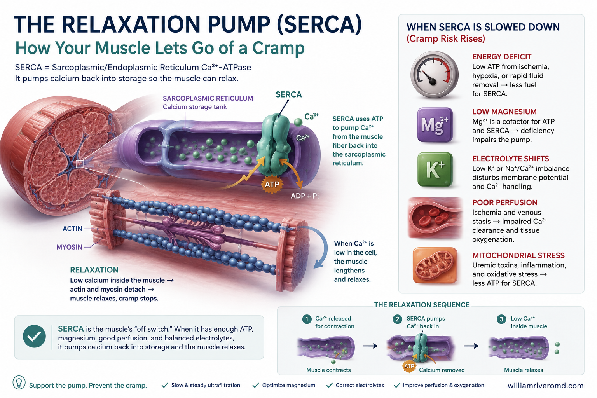
A Filipino hemodialysis patient's lower leg showing intradialytic calf cramping and a brown gaiter of stasis pigmentation — two signals from one struggling leg.
© renalcarematters.com
Most people think the hard work a muscle does is the squeezing — the contraction. The truth is the opposite. A muscle only stays painful and locked if it cannot relax. Relaxation is the part that runs on energy. Inside every muscle cell there is a tiny pump called SERCA (sarco/endoplasmic reticulum Ca²⁺-ATPase) that uses energy (ATP) to vacuum calcium back into storage so the muscle can let go. No ATP — no relaxation — and the muscle stays cramped, sometimes for minutes.Karamihan ay nag-iisip na ang mahirap na trabaho ng kalamnan ay ang paghigpit — ang pagkontrak. Ang katotohanan ay kabaligtaran. Ang kalamnan ay nananatili lamang masakit at naka-lock kapag hindi ito makapag-relax. Ang pagrelax ang siyang gumagamit ng enerhiya. Sa bawat selula ng kalamnan ay may maliit na pump na tinatawag na SERCA na gumagamit ng ATP upang ibalik ang calcium sa imbakan nito, kaya nakakapagpakawala ang kalamnan. Kapag walang ATP — walang relax — at ang kalamnan ay mananatiling naka-pulikat, minsan ng ilang minuto.Kasagaran nag-isip ang mga tawo nga ang lisod nga trabaho sa kaunoran mao ang paghigot — ang pagkontrak. Ang tinuod sukwahi. Magpabilin lamang ang kaunoran nga sakit ug naka-lock kung dili kini maka-relax. Ang pag-relax mao ang gigamit og kusog. Sa matag selula sa kaunoran adunay gamay nga pump nga tawag og SERCA nga naggamit og ATP aron ibalik ang calcium sa tindahan niini, aron makabuhi ang kaunoran. Kung walay ATP — walay relax — ug ang kaunoran magpabilin nga naka-kulokot, usahay sulod sa pipila ka minuto.Reng dakal a tau magisip lang ing malisud a obra na ning kaunan iyang pamamuk — reng pamigkontrak. Reng matua mas-sukwahi. Mananatili mu ya makasakit at naka-lock ing kaunan nung ali ya maka-relax. Reng pamag-relax iyang manga-aksaya gamit kalakasan. Keng dilas a selula na ning kaunan, ating malating pump a awsan dang SERCA a gagamit ATP bang ibalik ya ing calcium karing pisanan na, bang makabuhi ya ing kaunan. Nung alang ATP — alang relax — at ing kaunan mananatili ya naka-pulikat, minsan na ning mapilan a minuto.
ATP is made by your cells when there is enough oxygen reaching them and enough fuel and cofactors (B-vitamins, carnitine, magnesium, CoQ10) to run the engine. Anything that lowers oxygen delivery to the muscle, or runs the engine down on fuel and cofactors, is one step away from a cramp.Ang ATP ay ginagawa ng iyong mga selula kapag sapat ang oxygen na umaabot sa kanila at sapat ang panggatong at cofactors (B-vitamins, carnitine, magnesium, CoQ10) upang patakbuhin ang makina. Anumang nagpapababa sa oxygen na pumapasok sa kalamnan, o nagpapaubos ng panggatong at cofactors, ay isang hakbang lamang palayo sa pulikat.Ang ATP gibuhat sa imong mga selula kung igo ang oxygen nga moabot kanila ug igo ang sugnod ug cofactors (B-vitamins, carnitine, magnesium, CoQ10) aron padaganon ang makina. Bisan unsa nga nagpaubos sa oxygen nga moabot sa kaunoran, o nagpaubos sa sugnod ug cofactors, usa lamang ka lakang palayo sa kulokot.Reng ATP gagawa la na ning imung selulas nung sapat ya ing oxygen a daratang karela at sapat la reng sugnod ampo reng cofactors (B-vitamins, carnitine, magnesium, CoQ10) bang patakbuhin ya ing makina. Nung nanumang pamiyabang king oxygen a duduming king kaunan, o pamiyabang king sugnod at cofactors, metung mu ya kang lakad palayu king pulikat.
Teaching one-linerBuod ng aralinSumada sa leksyonBuud na ning aral
A dialysis cramp is your leg muscle's oxygen debt made visible — relaxation needs ATP, ATP needs oxygen and cofactors, and ultrafiltration transiently takes both away.Ang pulikat sa dialysis ay ang utang sa oxygen ng iyong kalamnan na nagpapakita ng sarili — ang pagrelax ay nangangailangan ng ATP, ang ATP ay nangangailangan ng oxygen at cofactors, at sa ultrafiltration pansamantalang naaalis ang dalawa.Ang kulokot sa dialysis mao ang utang sa oxygen sa imong kaunoran nga gipakita sa iyang kaugalingon — ang pag-relax nagkinahanglan og ATP, ang ATP nagkinahanglan og oxygen ug cofactors, ug sa ultrafiltration mawala ang duha pansamantala.Reng pulikat king dialysis iya ya ing utang king oxygen na ning kaunan mu a paliwawagi — ing pamag-relax kailangan na ATP, ing ATP kailangan na oxygen ampo reng cofactors, at king ultrafiltration sansandali la mawala reng adua.
Why cramps hit in the second half of dialysis — five forces at once.Bakit dumarating ang pulikat sa ikalawang kalahati ng dialysis — limang puwersa nang sabay.Ngano nga moabot ang kulokot sa ikaduhang katunga sa dialysis — lima ka pwersa nga dungan.Baket daratang ya ing pulikat king kayadua a kapitnan na ning dialysis — limang puwersa a kuyug-kuyug.
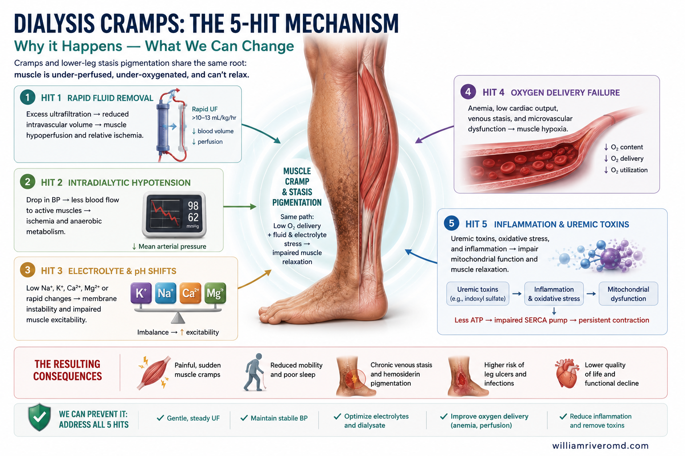
Review-article schematic of the five-hit cramp mechanism converging on SERCA failure — hypoperfusion, contraction alkalosis, electrolyte shift, cofactor-limited ATP, mechanical stretch.
© renalcarematters.com
Roughly seven of every ten dialysis cramps happen in the final hour of the session, exactly when the most fluid has been removed and your blood pressure is lowest. Five different things converge on the same end point — a muscle that cannot make enough ATP to let go.Halos pito sa bawat sampung pulikat sa dialysis ay nangyayari sa huling oras ng sesyon, sa eksaktong oras na pinakamaraming likido na ang naalis at pinakamababa ang iyong presyon ng dugo. Limang magkakaibang bagay ang nagsasama sa parehong dulo — isang kalamnan na hindi makagawa ng sapat na ATP upang magpakawala.Mga pito sa matag napulo ka kulokot sa dialysis mahitabo sa kataposang oras sa sesyon, sa eksaktong panahon nga labing daghan na ang tubig nga gikuha ug labing ubos na ang imong presyon sa dugo. Lima ka lahi nga butang nagtagbo sa parehas nga tumoy — usa ka kaunoran nga dili makahimo og igo nga ATP aron makabuhi.Pituan king dilas mapulu a pulikat king dialysis matuli la king tauling oras na ning sesyon, kabud king panaun a kabud kayatian ne mailis ya ing danum at kabud kababang presyon na ning daya mu. Limang miyaibang bage saut lang king dilas a sapnu — metung a kaunan a ali makayari ATP bang makabuhi.
Less blood, less oxygenKaunting dugo, kaunting oxygenGamay nga dugo, gamay nga oxygenMapilang daya, mapilang oxygen
When the machine pulls fluid out faster than your body can refill the bloodstream, your blood pressure drops and the leg muscles — the last in line — lose their oxygen supply first.Kapag ang makina ay humihigop ng likido nang mas mabilis kaysa sa kayang punan ng katawan, bumababa ang presyon at ang kalamnan ng binti — siyang huli sa pila — ang unang nawawalan ng oxygen.Kung ang makina mokuha og tubig nga mas paspas kay sa madakop sa lawas, mokunhod ang presyon ug ang kaunoran sa bitiis — ang kataposan sa pila — ang unang mawad-an og oxygen.Nung ing makina kumukuha danum a mas mabilis kaysa keng mayari na ning katawan, kumakaba ya ing presyon at ing kaunan ning bitis — reng kataposan king pila — iyang munang mauwalan oxygen.
Alkalosis from "concentrating" the bloodAlkalosis mula sa pag-konsentra ng dugoAlkalosis gikan sa pagkonsentra sa dugoAlkalosis ibat king pamikonsentra ning daya
Pulling water out of the blood concentrates bicarbonate, and dialysate bicarbonate adds more. The blood swings alkaline, calcium gets locked onto albumin, and nerves and muscles become twitchy.Ang paghigop ng tubig sa dugo ay nagpapakonsentra ng bicarbonate, at ang dialysate bicarbonate ay nagdadagdag pa. Ang dugo ay nagiging alkalino, ang calcium ay nakukuyom sa albumin, at ang nerbiyo at kalamnan ay nagiging madaling mauudyok.Ang pagkuha og tubig sa dugo nagpakonsentra og bicarbonate, ug ang dialysate bicarbonate magdugang pa. Ang dugo mahimong alkaline, ang calcium ma-lock sa albumin, ug ang mga nerbiyo ug kaunoran mahimong mahuyang.Reng pag-alis na danum keng daya pakonsentra ya ing bicarbonate, at ing dialysate bicarbonate magdudugang pa. Ing daya magiging alkaline, ing calcium maka-lock keng albumin, at reng nerbiyo at kaunan magiging mauudyukan.
Salt, sugar, and mineral shiftsPagbabago sa asin, asukal, at mineralPagbalhin sa asin, asukal, ug mineralPamipalit king asin, asukal, ampo mineral
During HD, sodium, potassium, magnesium and blood-osmolarity all drop fast. Cells become electrically jumpy and fire when they should not — a recipe for spontaneous muscle activity.Sa HD, ang sodium, potassium, magnesium, at osmolarity ng dugo ay biglang bumababa. Ang mga selula ay nagiging madali kang mapaputok at gumagana kahit hindi dapat — isang resipe para sa kusang aktibidad ng kalamnan.Sa HD, ang sodium, potassium, magnesium, ug osmolarity sa dugo dali nga mokunhod. Ang mga selula mahimong dali nga magpabuto ug magtrabaho bisan dili angay — usa ka resipe alang sa kusgan nga kalihokan sa kaunoran.King HD, ing sodium, potassium, magnesium, ampo ing osmolarity na ning daya, lulukad lang biglang mababa. Reng selulas magiging mauudyukan at magobra agpang ali dapat — metung a resipe king kusug a kabag na ning kaunan.
Empty fuel tank for ATPWalang panggatong para sa ATPWalay sugnod alang sa ATPAlang sugnod king ATP
Even with enough oxygen, the muscle's engine cannot run without carnitine, B-vitamins, magnesium, and CoQ10. About 85% of HD patients lose carnitine each session, and protein-restricted diets keep B-vitamins low. Statins can drop CoQ10 further. The result: an ATP shortfall exactly when SERCA needs it most.Kahit may sapat na oxygen, hindi tatakbo ang makina ng kalamnan nang walang carnitine, B-vitamins, magnesium, at CoQ10. Halos 85% ng mga HD na pasyente ay nawawalan ng carnitine kada sesyon, at ang protein-restricted na diyeta ay nagpapanatiling mababa ang B-vitamins. Ang statins ay maaaring magpababa pa ng CoQ10. Resulta: kakulangan ng ATP nang eksakto sa oras na kailangang-kailangan ito ng SERCA.Bisan adunay igo nga oxygen, dili modagan ang makina sa kaunoran kung walay carnitine, B-vitamins, magnesium, ug CoQ10. Mga 85% sa mga HD nga pasyente nawad-an og carnitine matag sesyon, ug ang protein-restricted nga diyeta nagpabilin nga ubos ang B-vitamins. Ang statins makapaubos pa sa CoQ10. Resulta: kakulangon sa ATP gayud nga oras nga gikinahanglan kini sa SERCA.Maski sapat ya ing oxygen, ali magtakbu ya ing makina na ning kaunan nung alang carnitine, B-vitamins, magnesium, ampo CoQ10. Mga 85% reng pasyenteng HD mauwalan lang carnitine kada sesyon, at reng protein-restricted nga diyeta panatilihian dang mababa reng B-vitamins. Reng statins akapababang la CoQ10. Resulta: kakulangan a ATP kabud king panaun a kayatian na SERCA.
A squeezed, shortened, fatigued legNaipipit, paikli, at pagod na bintiGipiit, gimubo, ug gikapoy nga bitiisTinipas, pinandak, at pagal a bitis
Edema squeezes the calf's tiny blood vessels so oxygen has farther to travel into the muscle. Sitting reclined for four hours leaves the calf in a shortened, fatigued position — the spindles inside the muscle keep firing while the tendon's "brake" weakens, and the muscle locks. This is exactly why a gentle stretch at the chair relieves the cramp.Ang pamamaga ay pumipiga sa maliliit na ugat sa lulod kaya kailangang mas malayong daanan ng oxygen patungo sa kalamnan. Ang upo nang nakahilig nang apat na oras ay nag-iiwan sa lulod na nasa paikling at pagod na posisyon — ang spindles sa loob ng kalamnan ay patuloy na gumagana habang humihina ang "preno" sa tendon, at ang kalamnan ay nababalisa. Ito mismo ang dahilan kaya ang banayad na pag-stretch sa upuan ay nagbibigay-ginhawa.Ang panghubag mopiit sa gagmay nga ugat sa batiis maong ang oxygen kinahanglan nga mas layo nga molakaw padulong sa kaunoran. Ang paglingkod nga gipahayag sulod sa upat ka oras nagbilin sa batiis nga naa sa gimubo, gikapoy nga posisyon — ang spindles sa kaunoran nagpadayon sa pagtrabaho samtang naghuyang ang "preno" sa tendon, ug ang kaunoran ma-lock. Mao kini ang hinungdan ngano nga ang mahinay nga pag-stretch sa lingkoranan makapahupay sa kulokot.Reng pamabuktut tutuipas la king maliliting ugat king lulod kaya kailangan na mas marayung pamilakad na ning oxygen papuntang king kaunan. Ing pamilukluk a naka-hilig king apat a oras manalakid ya king lulod king pinandak at pagal a posisyon — reng spindles king kaunan magtatrabaho mu agpang humuhuyang ya ing "preno" king tendon, at ing kaunan maka-lock. Iya ya ing dahilan ban ing maranged a pag-stretch king luklukan akadarapat na ya ing pulikat.
Why the skin slowly darkens above the ankles.Bakit dahan-dahang nangingitim ang balat sa itaas ng bukung-bukong.Ngano nga hinay-hinay nga moitom ang panit ibabaw sa buko-buko.Baket marayung mangingitiman ya ing balat babo ning bukung-bukung.
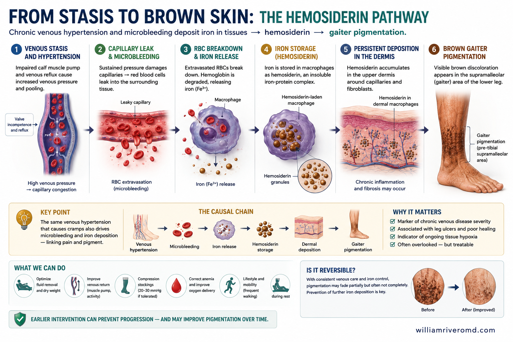
Schematic of chronic venous hypertension widening dermal capillary junctions, with red cell extravasation, hemosiderin deposition, matrix metalloproteinase (MMP)-driven matrix damage, and the consequence ladder to stasis ulcer.
© renalcarematters.com
The brown discoloration you see is not dirt, sun, or melanin. It is iron — specifically the iron from red blood cells that have leaked out of the tiny vessels in the skin of your lower legs and broken down. The body cannot mop the iron up fast enough, so it stays in the tissue as a pigment called hemosiderin. Once deposited it is very slow to clear, which is why the gaiter pattern persists for years.Ang kayumanggi sa balat ay hindi dumi, araw, o melanin. Ito ay bakal — partikular ang bakal mula sa mga pulang selula ng dugo na tumagas sa mga maliliit na ugat sa balat ng iyong ibabang binti at nasira. Hindi kayang malinis ng katawan ang bakal nang mabilis, kaya nananatili ito sa tisyu bilang isang pigmento na tinatawag na hemosiderin. Kapag naipon na, napakabagal itong mawala, kaya nananatili ang gaiter pattern sa loob ng mga taon.Ang itom nga kolor sa panit dili hugaw, adlaw, o melanin. Kini puthaw — partikular ang puthaw gikan sa mga pula nga selula sa dugo nga nagatulo gikan sa gagmay nga mga ugat sa panit sa imong ubos nga bitiis ug naguba. Dili madagan-dagan sa lawas ang puthaw, busa magpabilin kini sa tisyu isip pigmento nga tawag og hemosiderin. Kung gibilin na, dugay kaayo nga mawala, mao nga nagpabilin ang gaiter pattern sulod sa mga tuig.Reng mangingitim a balat ali ya pati, aldo, o melanin. Iya ya bakal — partikular reng bakal ibat keng malulutung selulas na ning daya a tinula keng maliliting ugat king balat na ning baba mung bitis at nasira. Ali na ya makayari ya ing katawan ya ing bakal a mabilis, kaya mananatili ya king tisyu bilang pigmento a awsan dang hemosiderin. Pamipinanun ne, marayu yang mawala, kaya mananatili ya ing gaiter pattern king mabilug a banwa.
The reason red blood cells leak out in the first place is chronic venous hypertension: the veins in your lower legs cannot handle the standing pressure of all the blood and interstitial water above them. Over time, the tiny vessel walls stretch, gaps open, and red cells slip through. Iron from those cells then activates enzymes in the dermis that perpetuate inflammation, harden the skin (lipodermatosclerosis), slow healing, and — in advanced cases — open into a venous ulcer.Ang dahilan kung bakit tumatagas ang mga pulang selula sa unang lugar ay ang matagalang mataas na presyon sa ugat: ang mga ugat sa iyong ibabang binti ay hindi kayang hawakan ang nakatayong presyon ng lahat ng dugo at tubig sa interstitium sa itaas nila. Sa paglipas ng panahon, ang mga maliliit na pader ng ugat ay umuunat, may mga puwang na bumubukas, at ang mga pulang selula ay nakakasingit. Ang bakal mula sa mga selulang iyon ay nagti-trigger ng mga enzyme sa dermis na nagpapanatili ng pamamaga, nagpapatigas ng balat (lipodermatosclerosis), nagpapabagal ng paggaling, at — sa mga lubhang kaso — bumubukas sa isang venous ulcer.Ang hinungdan ngano nga nagatulo ang mga pula nga selula sa una mao ang kanunay nga taas nga presyon sa ugat: dili madala sa mga ugat sa imong ubos nga bitiis ang nagatindog nga presyon sa tanan nga dugo ug tubig sa interstitium ibabaw kanila. Sa paglabay sa panahon, ang gagmay nga mga ugat magbati-banat, magabuka ang mga lapad, ug makasingit ang pula nga mga selula. Ang puthaw gikan sa mga selula nga nagasugod sa mga enzyme sa dermis nga nagpadayon sa hubag, nagpagahi sa panit (lipodermatosclerosis), nagpahinay sa pag-ayo, ug — sa mga grabe nga kaso — moabli sa usa ka venous ulcer.Reng dahilan ban tutula la reng malulutung selulas king mumuna, iya ya ing marayung pamipakatas na presyon king ugat: reng ugat king baba mung bitis ali na lang makayari ya ing nakatindig a presyon na ning mabilug a daya ampo danum king interstitium babo na karela. Pamipalabas na ning panaun, reng maliliting padir na ning ugat manguyat lang, ating bubuklung, at reng malulutung selulas makasingit la. Ing bakal ibat karing selulas a ita pampakit lang enzyme king dermis a pampatuloy king pamabuktut, papipataktak na ning balat (lipodermatosclerosis), pampabagal na paggaling, at — king malulungkut a kaso — pampabukad king venous ulcer.
In simple terms: the same standing water in your legs that puffs up your shoes also slowly stains your skin. The pigment is the slow-motion archive of a leg that has been over-pressured and under-oxygenated for a long time.Sa simpleng salita: ang parehong nakatayong tubig sa iyong binti na nagpapamaga ng iyong sapatos ay siya ring dahan-dahang naninigwalan ng iyong balat. Ang pigmento ay ang mabagal na rekord ng isang binti na matagalang sobrang pinipiga at kulang sa oxygen.Sa yano: ang parehas nga nagatindog nga tubig sa imong bitiis nga naghubag sa imong sapatos mao usab ang hinay-hinay nga nagamansa sa imong panit. Ang pigmento mao ang hinay nga rekord sa usa ka bitiis nga taas-panahon nga sobra nga gipiit ug kulang sa oxygen.King simpli: ing dilas a nakatindig a danum king imung bitis a pampabukut na ning imung sapatu iya pin ya ing marayung pamaniman king imung balat. Reng pigmento iya ya ing marayung rekord na ning metung a bitis a marayung pinipiit at kulang ya king oxygen.
Two signals, one struggling leg — the "two axes, one field" idea.Dalawang senyales, isang nahihirapang binti — ang ideya ng "dalawang axis, isang larangan".Duha ka senyales, usa ka naglisod nga bitiis — ang ideya nga "duha ka axis, usa ka uma".Aduang senyales, metung a malisud a bitis — ing ideya ning "aduang axis, metung a labuad".
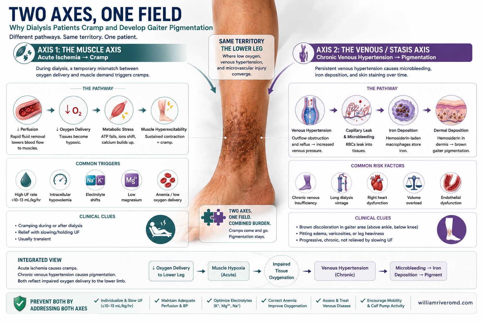
Two-panel comparison showing the acute axis (intradialytic cramp) and chronic axis (brown gaiter pigmentation) descending from a single shared upstream field of lower-limb hypoxia.
© renalcarematters.com
The cramp lives on a fast clock — minutes to hours, tied to the dialysis session. The pigment lives on a slow clock — months to years, the residue of every hour you spent on your feet between sessions. But both share the same underlying battlefield: an overloaded, congested, low-oxygen lower limb.Ang pulikat ay nasa mabilis na orasan — minuto hanggang oras, nakatali sa sesyon ng dialysis. Ang pigmento ay nasa mabagal na orasan — buwan hanggang taon, ang tira ng bawat oras na nakatayo ka sa pagitan ng mga sesyon. Pero pareho silang may kaparehong larangan: isang sobrang puno, naipipit, mababa-sa-oxygen na ibabang binti.Ang kulokot naa sa kusog nga orasan — minuto hangtod oras, nahigot sa sesyon sa dialysis. Ang pigmento naa sa hinay nga orasan — bulan hangtod tuig, ang nahabilin sa matag oras nga nagtindog ka tali sa mga sesyon. Apan parehas silang nagdumala sa parehas nga gubat: usa ka napuno, gipiit, ubos-sa-oxygen nga ubos nga bitiis.Reng pulikat ya pati king mabilis a orasan — minuto hanggang oras, makatali ya king sesyon na ning dialysis. Reng pigmento ya pati king mabayat a orasan — banwa hanggang banua, ing tira na ning dilas a oras a nakatindig ka kabang reng sesyon. Pero pareho lang dakal a labuad: metung a napuno, tinipas, mababang-oxygen a baba a bitis.
Ultrafiltration → plasma volume falls → leg muscle hypoperfusion + alkalosis + electrolyte/osmolar shift + cofactor-starved ATP → SERCA fails → muscle locks.Ultrafiltration → bumababa ang dami ng dugo → kakulangan ng dugo sa kalamnan ng binti + alkalosis + paglipat ng electrolyte/osmolar + kakulangan ng cofactor para sa ATP → bumagsak ang SERCA → naka-lock ang kalamnan.Ultrafiltration → mokunhod ang plasma volume → kakulangon sa dugo sa kaunoran sa bitiis + alkalosis + pagbalhin sa electrolyte/osmolar + ATP nga kulang sa cofactor → ma-fail ang SERCA → ma-lock ang kaunoran.Ultrafiltration → kakaba ya ing plasma volume → kakulangan king daya king kaunan ning bitis + alkalosis + pamipalit king electrolyte/osmolar + ATP a kulang ya king cofactor → magkamali ya ing SERCA → ma-lock ya ing kaunan.
Interdialytic volume overload → venous hypertension in dependent legs → red cells extravasate → iron deposits as hemosiderin → MMP-driven dermatitis, fibrosis, ulcer risk.Interdialytic na sobrang likido → mataas na presyon sa ugat ng nakabitin na binti → tumatagas ang mga pulang selula → naipupon ang bakal bilang hemosiderin → MMP-driven na dermatitis, fibrosis, panganib ng ulcer.Interdialytic nga sobra nga volume → taas nga presyon sa ugat sa nagbitay nga bitiis → mosingit ang mga pula nga selula → magpundok ang puthaw isip hemosiderin → MMP-driven nga dermatitis, fibrosis, peligro sa ulcer.Interdialytic a kayatian a volume → matas a presyon king ugat na ning manibatayan a bitis → mantatatas la reng malulutung selulas → magpupun ya ing bakal bilang hemosiderin → MMP-driven a dermatitis, fibrosis, peligro king ulcer.
Honest disclosure — this is a teaching modelMatapat na paliwanag — ito ay isang turo na modeloMatinud-anon nga pasabot — kini usa ka modelo sa pagtudloMatapat a paliwanag — iya yang modelo king pamagturu
Each piece — the cramp pathophysiology, the venous-hypertension hemosiderin pathway, the shared volume-overload background — is well established in its own literature. The idea that they are "two outputs of one upstream lower-limb hypoxia" is a unifying teaching hypothesis. It explains why they cluster together in real life and gives us one set of levers to pull, but it is not yet a proven causal entity in published trials.Ang bawat piraso — ang pathophysiology ng pulikat, ang daan ng hemosiderin sa pamamagitan ng mataas na venous hypertension, ang nakabahaging volume overload — ay matatag sa sarili nitong literatura. Ang ideya na sila ay "dalawang resulta ng isang upstream na lower-limb hypoxia" ay isang pinagbubuklod na turo. Ipinapaliwanag nito kung bakit sila magkasama sa totoong buhay at nagbibigay ng isang hanay ng mga lever, pero hindi pa ito isang napatunayang causal entity sa mga published na pag-aaral.Ang matag piraso — ang pathophysiology sa kulokot, ang dalan sa hemosiderin pinaagi sa taas nga venous hypertension, ang gipaambit nga volume overload — lig-on sa kaugalingong literatura. Ang ideya nga kini "duha ka resulta sa usa ka upstream nga lower-limb hypoxia" usa ka naghiusang pagtulun-an. Gipasabot niini ngano nga nag-uban sila sa tinuod nga kinabuhi ug naghatag og usa ka grupo sa mga lever, apan dili pa kini napamatud-an nga causal entity sa mga gimantala nga pagtuon.Reng dilas a piraso — ing pathophysiology na ning pulikat, ing dalan na ning hemosiderin king pamipalibutan na ning matas a venous hypertension, ing pisamantala na ning volume overload — masistematik la king sariling literatura. Reng ideya nung sila aduang resulta na ning metung a upstream a lower-limb hypoxia, metung yang nagkakapagsama-samang turu. Ipalwawagan na ya nung baket sila magkayatung king matuang bie at panagdang la metung a grupo a lever, pero ali pa ya makapatutuhanan a causal entity king pamipakikitaan a pag-aaral.
What you can do — a practical plan that attacks both problems at once.Anong magagawa mo — isang praktikal na plano na lumulusob sa parehong problema nang sabay.Unsa ang mahimo nimo — usa ka praktikal nga plano nga mosulong sa parehong mga problema nga dungan.Nanu reng kayang gawan mu — metung a praktikal a plano a lumulusob keng kapareho a mga problema a kuyug-kuyug.
Because the cramps and the pigmentation share a single upstream cause (a chronically over-loaded, under-oxygenated leg), almost every meaningful action you take helps both at the same time. Here is the practical plan, in seven moves.Dahil ang pulikat at ang pigmento ay parehong nag-uugat sa isang sanhi (isang matagalang sobrang puno, kulang-sa-oxygen na binti), halos bawat makabuluhang aksyon na gagawin mo ay tumutulong sa dalawa nang sabay. Narito ang praktikal na plano, sa pitong galaw.Tungod kay ang kulokot ug ang pigmento parehas nga naggikan sa usa ka hinungdan (usa ka taas-panahon nga sobra nga gipuno, kulang-sa-oxygen nga bitiis), halos matag mahinungdanon nga aksyon nga imong buhaton motabang sa duha nga dungan. Ania ang praktikal nga plano, sa pito ka mga lihok.Pamipasaut karing pulikat ampong pigmento parehong magugat la king metung a dahilan (metung a marayung kabud-kabud puno, kulang-sa-oxygen a bitis), halus dilas a mahinungdanon a aksyon a gawan mu makakatulong ya keng aduang kuyug-kuyug. Iti ya ing praktikal a plano, king pitung galaw.
1. Keep IDWG low1. Panatilihing mababa ang IDWG1. Hupti nga ubos ang IDWG1. Panatilihing mababa ya ing IDWG
Interdialytic weight gain (IDWG) is the number-one driver of high UFR and last-hour cramps. Aim for ≤ 4–5% of dry weight between sessions. Most of the win comes from salt, not water — chips, instant noodles, dried fish, hotdogs, soy sauce. Less salt → less thirst → less weight.Ang Interdialytic Weight Gain (IDWG) ay ang pinakamalaking dahilan ng mataas na UFR at huling-oras na pulikat. Layunin ay ≤ 4–5% ng tuyong timbang sa pagitan ng mga sesyon. Ang karamihan ng panalong galing sa asin, hindi sa tubig — chips, instant noodles, daing, hotdog, toyo. Mas kaunting asin → mas kaunting uhaw → mas kaunting timbang.Ang Interdialytic Weight Gain (IDWG) mao ang pangunang hinungdan sa taas nga UFR ug sa kataposang-oras nga kulokot. Tinguhaa ang ≤ 4–5% sa uga nga timbang tali sa mga sesyon. Ang kadaghanan sa kadaugan gikan sa asin, dili sa tubig — chips, instant noodles, uga, hotdog, toyo. Gamay nga asin → gamay nga kauhaw → gamay nga timbang.Reng Interdialytic Weight Gain (IDWG) iya ya ing kabud na dahilan king matas a UFR at king pulikat king tauling oras. Tutuluya ya ing ≤ 4–5% ning matuyung timbang kabang reng sesyon. Reng dakal a panalo galing king asin, ali king danum — chips, instant noodles, daing, hotdog, toyo. Mapilang asin → mapilang uhaw → mapilang timbang.
2. Honest dry weight2. Tapat na tuyong timbang2. Matinud-anon nga uga nga timbang2. Matapat a matuyung timbang
If the dry weight your team set is too low, your nurse has to pull more water and you cramp more. If it is too high, your legs stay congested and your skin keeps darkening. Ask your team to re-check it every 1–3 months — especially after major weight change, infection, or a hospital stay.Kung ang tuyong timbang na itinakda ng team mo ay masyadong mababa, kailangan magtanggal pa ng mas maraming tubig at lalo kang pumupulikat. Kung masyadong mataas, ang iyong mga binti ay mananatiling naipipit at patuloy na nangingitim ang balat. Hilingin sa iyong team na suriin muli ito tuwing 1–3 buwan — lalo na pagkatapos ng malaking pagbabago sa timbang, impeksiyon, o pagpasok sa ospital.Kung ang uga nga timbang nga gitakda sa imong team sobrang ubos, kinahanglan magkuha pa og mas daghan nga tubig ug magkulokot ka og mas daghan. Kung sobrang taas, magpabilin nga gipiit ang imong mga bitiis ug magpadayon sa pag-itom ang panit. Pangayoa sa imong team nga susihon kini matag 1–3 ka bulan — labi na human sa dakong pagbag-o sa timbang, impeksyon, o pag-anha sa ospital.Nung reng matuyung timbang a itinakda na ning team mu masyadu yang mababa, kailangan kaba ya pa danum at lalu kang pulikatan. Nung masyadu yang matas, mananatili lang naipipit reng imung bitis at patuloy a mangingitim ya ing balat. Ipangadi mu king imung team a suriin la ya ulit kada 1–3 banua — lalu na kanaliu na ning maragul a pamipalit king timbang, impeksiyon, o pamimaki king ospital.
3. Slower fluid removal3. Mas mabagal na pag-alis ng tubig3. Mas hinay nga pagkuha sa tubig3. Mas mabayat a pamipakuha king danum
Ask whether your ultrafiltration rate (UFR) is ≤ 10 mL/kg/h. If it is much higher, a small change — adding 30 minutes to each session, or moving from three to four sessions a week — often eliminates cramps and lowers leg congestion at the same time.Itanong kung ang iyong ultrafiltration rate (UFR) ay ≤ 10 mL/kg/h. Kung mas mataas, isang maliit na pagbabago — pagdaragdag ng 30 minuto sa bawat sesyon, o paglipat mula tatlo patungong apat na sesyon kada linggo — ay madalas tumatanggal ng pulikat at sabay na bumababa ang pagkasikip ng binti.Pangutana kung ang imong ultrafiltration rate (UFR) ≤ 10 mL/kg/h. Kung labihan ka taas, usa ka gamay nga pagbag-o — pagdugang og 30 minuto sa matag sesyon, o pagbalhin gikan sa tulo padulong sa upat ka sesyon kada semana — kasagaran mag-tangtang sa kulokot ug mokunhod sa pagkapiit sa bitiis nga dungan.Tanungan mu nung reng imung ultrafiltration rate (UFR) ≤ 10 mL/kg/h. Nung mas matas ya, metung a maranged a pamipalit — pamipaduasi king 30 minuto kada sesyon, o pamipalit gikan king atlu papuntang king apat a sesyon kada semana — parati lang itinatanggal reng pulikat at saut lang kumakaba ya ing pamipakapiit na ning bitis.
4. Elevate legs after HD4. Itaas ang mga binti pagkatapos ng HD4. Ipataas ang mga bitiis human sa HD4. Pakatasan reng bitis kanaliu ning HD
For 20–30 minutes after dialysis (and again before bed), lie down and prop your calves above the level of your heart. This drains the static venous pressure that has been staining your skin, helps refill your circulation, and lowers the risk of overnight cramps.Sa loob ng 20–30 minuto pagkatapos ng dialysis (at muli bago matulog), humiga at itaas ang iyong mga lulod nang mas mataas pa sa antas ng puso. Pinapaalis nito ang static venous pressure na nag-iiwan ng mantsa sa iyong balat, tumutulong magpuno ng iyong sirkulasyon, at binabawasan ang panganib ng pulikat sa gabi.Sulod sa 20–30 minuto human sa dialysis (ug usab sa wala pa matulog), paghigda ug ipataas ang imong mga batiis nga mas taas pa sa lebel sa kasingkasing. Mokuha kini sa static venous pressure nga nagamansa sa imong panit, motabang sa pagpuno sa imong sirkulasyon, ug mokunhod sa peligro sa kulokot sa gabii.Sulod king 20–30 minuto kanaliu ning dialysis (at muling bayu mu matudtud), pamayatu at pakatasan reng imung lulod a mas matas pa king lebel na ning pusu. Inalis na ya ing static venous pressure a maniman king imung balat, akatulungan na ya ing imung sirkulasyon, at akababa ya ing peligro king pulikat king bengi.
5. Stretching at the chair5. Mag-stretch sa upuan5. Pag-stretch sa lingkoranan5. Magsretch king luklukan
Every 30 minutes during HD, do slow ankle pumps (pull the toes up, then point them down) and gentle calf stretches. This re-loads the tendon's "brake" inside the muscle and physically prevents the spindle-driven firing that turns into a cramp.Tuwing 30 minuto sa HD, gawin ang mabagal na ankle pumps (hilahin ang mga daliri ng paa pataas, pagkatapos pababa) at banayad na calf stretches. Pinapunan nito ang "preno" ng tendon sa loob ng kalamnan at pisikal na pinipigilan ang spindle-driven firing na nagiging pulikat.Matag 30 minuto sa HD, buhata ang hinay nga ankle pumps (birahon ang mga tudlo sa tiil paibabaw, dayon pailalom) ug mahinay nga calf stretches. Mopuno kini sa "preno" sa tendon sa kaunoran ug pisikal nga magbabag sa spindle-driven nga firing nga mahimong kulokot.Kada 30 minuto king HD, gawan mu reng mabayat a ankle pumps (haláo reng tudtud na ning bitis papuntang babo, kanaliu papuntang king babang) ampong reng maranged a calf stretches. Pinupuno na ya ing "preno" na ning tendon king kaunan at pisikal a pagbababag king spindle-driven a firing a maging pulikat.
6. Cofactors for the engine6. Cofactors para sa makina6. Cofactors alang sa makina6. Cofactors king makina
Talk to your nephrologist about a 12–24-week trial of L-carnitine — IV after each HD session is the form studied in trials, but where IV is unavailable, oral L-carnitine tablets (about 500–1000 mg twice daily) are a reasonable Philippine alternative — plus dialysis-appropriate renal B-vitamins, and have your magnesium checked. If you take a statin, ask whether CoQ10 supplementation is reasonable for you. These refill the fuel tank for ATP — exactly what the cramping muscle needs.Kausapin ang iyong nephrologist tungkol sa 12–24 linggong trial ng L-carnitine — ang IV pagkatapos ng HD ang ginagamit sa mga pag-aaral, pero kung walang IV, oral L-carnitine na tableta (mga 500–1000 mg dalawang beses kada araw) ay makatuwirang alternatibo sa Pilipinas — kasama ng renal B-vitamins, at suriin ang iyong magnesium. Kung umiinom ka ng statin, itanong kung makatuwiran para sa iyo ang CoQ10. Pinupunan nila ang tangke ng panggatong para sa ATP — eksaktong kailangan ng namumulikat na kalamnan.Pakigsulti sa imong nephrologist mahitungod sa 12–24 ka semana nga trial sa L-carnitine — ang IV human sa HD mao ang gigamit sa mga pagtuon, apan kung walay IV, oral L-carnitine nga tableta (mga 500–1000 mg kaduha kada adlaw) usa ka makatarunganon nga alternatibo sa Pilipinas — uban sa renal B-vitamins, ug susiha ang imong magnesium. Kung nag-inom ka og statin, pangutana kung makatarunganon alang nimo ang CoQ10. Mopuno kini sa tangke sa sugnod alang sa ATP — gayud nga gikinahanglan sa nag-kulokot nga kaunoran.Pakipag-uli ka king imung nephrologist tungkul king 12–24 a domingu a trial ning L-carnitine — reng IV kanaliu na ning HD iya ya ing gagamitan king pag-aaral, pero nung alang IV, oral L-carnitine a tableta (mga 500–1000 mg adua besis kada aldo) metung yang makatuwiran a alternatibu king Pilipinas — ampung renal B-vitamins, at suriin ya ing imung magnesium. Nung mamayinum ka statin, tanungan mu nung makatuwiran para keng imu ya ing CoQ10. Pinipunin na ya ing tangki na ning sugnod king ATP — kabud kayatian na ning nag-kukulokot a kaunan.
7. Compression — only after ABI7. Compression — sa ABI lamang muna7. Compression — human sa ABI7. Compression — bayu mu ABI
Graduated compression stockings are powerful against pigmentation, edema, and even cramp burden — but they are dangerous in legs with significant peripheral arterial disease, which is common in CKD. Never start compression without an ankle-brachial index (ABI) and a clinician's approval.Ang graduated compression stockings ay malakas laban sa pigmentasyon, pamamaga, at pulikat — ngunit delikado sa mga binti na may makabuluhang peripheral arterial disease, na karaniwan sa CKD. Huwag magsimula ng compression nang walang ankle-brachial index (ABI) at pahintulot ng clinician.Ang graduated compression stockings kusog batok sa pigmentasyon, panghubag, ug bisan sa palas-anon sa kulokot — apan delikado sa mga bitiis nga adunay mahinungdanong peripheral arterial disease, nga komon sa CKD. Ayaw pagsugod og compression nga walay ankle-brachial index (ABI) ug pagtugot sa klinisyan.Reng graduated compression stockings makusug la laban king pigmentasyon, pamabuktut, at pulikat — pero delikadu la king bitis nga ating mahinungdanon a peripheral arterial disease, a parating na king CKD. Eka magsimula ya ing compression nung alang ankle-brachial index (ABI) ampong pahintulut na ning klinisyan.
A continuum, not a sudden event — and diabetes pushes you forward faster.Isang continuum, hindi isang biglaang pangyayari — at pinapadali ng diyabetis ang iyong pag-usad.Usa ka continuum, dili kalit nga panghitabo — ug ang diabetes nagpadali sa pag-uswag.Metung yang continuum, ali biglang pangyayari — at reng diabetes pinapabilisan na ya ing pamipausad.
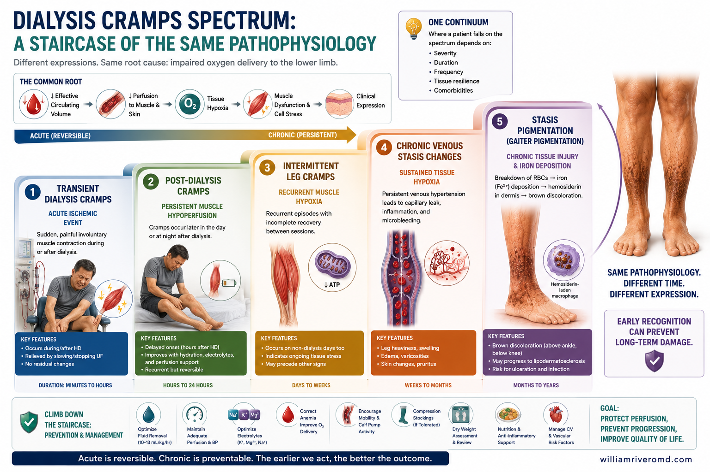
Seven-stage horizontal staircase of the Hypoxic Lower-Limb Spectrum, from subclinical through critical limb-threatening ischemia, with the diabetes-accelerator rail underneath.
© renalcarematters.com
The cramps you feel today and the brown gaiter you may see tomorrow are not separate problems — they are two visible milestones on a single, slow-moving spectrum of lower-limb hypoxia. Diabetes does not change the spectrum; it just pushes you along it faster, and at its later stages it changes the kind of wound that finally appears. Knowing where you stand on the spectrum is how you spot the next milestone before it arrives.Ang pulikat na nararamdaman mo ngayon at ang kayumanggi sa balat na maaari mong makita bukas ay hindi magkahiwalay na problema — sila ay dalawang nakikitang milyahe sa iisang dahan-dahan na spectrum ng kakulangan ng oxygen sa ibabang binti. Hindi binabago ng diyabetis ang spectrum; pinapabilis lang nito ang iyong pag-usad, at sa mga huling yugto nito ay binabago ang uri ng sugat na lumilitaw. Ang malaman kung nasaan ka sa spectrum ay paraan upang makita ang susunod na milyahe bago ito dumating.Ang kulokot nga gibati nimo karon ug ang itom nga gaiter nga mahimong makita nimo ugma dili lahi nga problema — sila duha ka makita nga milya sa usa ka hinay nga spectrum sa kakulangon sa oxygen sa ubos nga bitiis. Wala usabon sa diabetes ang spectrum; gipadali lang niini ang imong pag-uswag, ug sa kataposang mga yugto niini gibag-o niini ang matang sa samad nga motungha. Ang pagkahibalo kung asa ka sa spectrum mao ang paagi nga makita ang sunod nga milya sa wala pa kini moabot.Reng pulikat a dadalan mu ngeni ampong reng mangitiman a balat a aakit mu bukas eya magkayatung a problema — sila aduang nakikit a milya king metung mu marayung spectrum ning kakulangan ya ing oxygen king baba a bitis. Eya binabaguh na ning diabetes ya ing spectrum; pinapabilisan na mu ya ing imung pamipausad, at king tauling yugto nia binabaguh na ya ing uri na ning sugat a lumalabas. Reng pamikit nung nukarin ka king spectrum iya ya ing paraan ban makit ya ing susunud a milya bayu yang dumating.
Healthy legsMalusog na bintiHimsog nga bitiisMalusog a bitis
No cramps, no skin change. Margin to spare.Walang pulikat, walang pagbabago sa balat. Maraming reserba pa.Walay kulokot, walay pagbag-o sa panit. Daghan pa nga reserba.Alang pulikat, alang pamipalit king balat. Atin pang reserba.
→ Stay here: hold dry weight, IDWG < 5%, walk on non-HD days.→ Manatili dito: hawakan ang tuyong timbang, IDWG < 5%, maglakad sa mga araw na walang HD.→ Magpabilin diri: hupti ang uga nga timbang, IDWG < 5%, paglakaw sa mga adlaw nga walay HD.→ Manatili keni: hupti ya ing matuyung timbang, IDWG < 5%, panayan king aldo a alang HD.Last-hour cramps appearLumalabas ang pulikat sa huling orasMogawas ang kulokot sa kataposang orasLumalabas ya ing pulikat king tauling oras
Cramps during the final hour of dialysis; legs look normal afterwards. Margin is shrinking.Pulikat sa huling oras ng dialysis; normal pa ang itsura ng binti pagkatapos. Lumiliit na ang margin.Kulokot sa kataposang oras sa dialysis; normal pa ang bitiis human niini. Mokunhod na ang margin.Pulikat king tauling oras na ning dialysis; mu maganda pa la reng bitis kanaliu. Kumakaba na ya ing margin.
→ Action plan §6: tighten IDWG, lower UFR, intradialytic stretching, check carnitine.→ Action plan §6: bawasan ang IDWG, ibaba ang UFR, mag-stretch sa HD, suriin ang carnitine.→ Action plan §6: hugton ang IDWG, ipakubos ang UFR, pag-stretch sa HD, susiha ang carnitine.→ Action plan §6: kabasan ya ing IDWG, ibaba ya ing UFR, mag-stretch king HD, suriin ya ing carnitine.Faint pigment + persistent crampsBahagyang pigmento + tuluyang pulikatGamay nga pigmento + nagpadayong kulokotMaranged a pigmento + tuloy-tuloy a pulikat
A light brown tint appears above the ankles; cramps now happen most sessions and sometimes at night. Shoes feel tight by evening.Lumilitaw ang banayad na kayumanggi sa itaas ng bukung-bukong; nangyayari ang pulikat sa karamihan ng sesyon at minsan sa gabi. Masikip na ang sapatos pagsapit ng gabi.Mogawas ang gamay nga itom ibabaw sa buko-buko; ang kulokot mahitabo sa kadaghanan sa sesyon ug usahay sa gabii. Higpit na ang sapatos sa gabii.Lumalabas ya ing maranged a kayumanggi babo na ning bukung-bukung; reng pulikat dapat na king dakal a sesyon at minsan king bengi. Masikip na la reng sapatu king bengi.
→ Add leg elevation 2×/day. Ask team to re-check dry weight. Start the monthly photo log.→ Magdagdag ng leg elevation 2×/araw. Hilingin sa team na suriin muli ang tuyong timbang. Simulan ang monthly photo log.→ Magdugang og leg elevation 2×/adlaw. Pangayoa ang team nga susihon pag-usab ang uga nga timbang. Sugdan ang monthly photo log.→ Idagdag ya ing leg elevation 2×/aldo. Ipangadi mu king team a suriin la ulit ya ing matuyung timbang. Simulan mu ya ing monthly photo log.Established brown gaiter + thickening skinMatatag nang kayumanggi at lumalapot na balatLig-on nga itom nga gaiter + nipis nga panitMatatag a kayumanggi at lumalapot a balat
A clear brown gaiter; the skin feels dry, itchy, slightly hardened. The leg looks "tight". Cramps may extend beyond the chair into the night.Malinaw nang kayumanggi; tuyo, makati, at medyo matigas na ang balat. Mukhang "masikip" na ang binti. Maaaring lumawak ang pulikat sa gabi.Tin-aw nga itom nga gaiter; ang panit mamala, makati, gamay nga nipis. Mukhang "higpit" na ang bitiis. Mahimong molapad ang kulokot ngadto sa gabii.Maliwanag na ya ing kayumanggi; ing balat malanat, makati, maranged a matagas. Pareng "masikip" na ya ing bitis. Mayari na yang ungat ya ing pulikat king bengi.
→ Ask for an ABI + a vascular review. If diabetic, ask for a toe-brachial index (TBI) — ABI alone can be falsely normal.→ Humingi ng ABI + vascular review. Kung diyabetiko, hilingin ang toe-brachial index (TBI) — maaaring mali ang ABI lamang.→ Pangayoa ang ABI + vascular review. Kung diabetic, pangayoa ang toe-brachial index (TBI) — mahimong mali ang ABI nga lang.→ Pangadyan ka king ABI + vascular review. Nung diabetiko, pangadyan mu ya ing toe-brachial index (TBI) — mayari yang mali mu ya ing ABI lang.Stasis dermatitis — or in diabetics, the pre-ulcerStasis dermatitis — o sa diyabetiko, ang pre-ulcerStasis dermatitis — o sa diabetic, ang pre-ulcerStasis dermatitis — o king diabetiko, reng pre-ulcer
The pigmented skin starts to weep, crack, or develop eczema-like patches. In a diabetic patient with neuropathy, the warning sign instead is a callus, blister, or numb area over a pressure point. Both mean the skin barrier is failing.Nagsisimulang umiyak, mabasag, o magkaroon ng eczema na parte ang naka-pigment na balat. Sa diyabetikong pasyente na may neuropathy, ang babala ay kalyo, paltos, o manhid na bahagi sa lugar na pinipindot. Pareho silang nagpapakita na bumibigay na ang balat.Ang pigmented nga panit magsugod sa pag-agas, pagliki, o pagpamulak og eczema. Sa diabetic nga pasyente nga adunay neuropathy, ang senyales mao hinuon ang kalyo, paltos, o numb nga lugar sa pressure point. Pareho silang nagpasabot nga ang panit napaspas na.Reng pigmented a balat magsisimula yang tumagas, mabasag, o magtubu kalye eczema. King diabetiko a may neuropathy, reng babala iya ya ing kalyo, paltus, o numbidu a lugar king pressure point. Pareho lang sasabi nung ing balat malalapad na.
→ See your team within days. Daily foot self-exam mandatory. No going barefoot.→ Magpakita sa team sa loob ng ilang araw. Araw-araw na foot self-exam. Bawal mag-paa.→ Magpakita sa team sulod sa pipila ka adlaw. Adlaw-adlaw nga foot self-exam. Bawal mag-tiil og hubo.→ Magpakit ka king team king sulud na nung mapilan a aldo. Aldo-aldo a foot self-exam. Bawal mag-bitis a hubo.Open ulcer / amputation riskBukas na ulcer / panganib ng amputasyonBukas nga ulcer / peligro sa amputasyonBukas a ulcer / peligro a pamipakaul
An open wound — venous stasis ulcer in the gaiter area, or in diabetics a foot ulcer over a pressure point. This is a medical emergency. In dialysis patients with a diabetic foot ulcer, the risk of major amputation within one year is roughly 10× higher than in patients with the same ulcer but intact kidneys.Bukas na sugat — venous stasis ulcer sa gaiter, o sa diyabetiko, foot ulcer sa pressure point. Ito ay medical emergency. Sa mga pasyenteng dialysis na may diabetic foot ulcer, ang panganib ng major amputation sa loob ng isang taon ay halos 10× na mas mataas kaysa sa pasyente na may parehong ulcer pero buo ang bato.Bukas nga samad — venous stasis ulcer sa gaiter, o sa diabetic, foot ulcer sa pressure point. Kini medical emergency. Sa mga pasyente sa dialysis nga adunay diabetic foot ulcer, ang peligro sa major amputation sulod sa usa ka tuig mga 10× nga mas taas kaysa sa mga pasyente nga adunay parehas nga samad apan kompleto ang mga kidney.Bukas a sugat — venous stasis ulcer king gaiter, o king diabetiko, foot ulcer king pressure point. Iya ya medical emergency. Karing pasyenteng dialysis a may diabetic foot ulcer, reng peligro a major amputation king sulud na nung metung a banua mga 10× pang mas matas kaysa karing pasyente a may parehas a sugat pero buo la reng kidney.
→ Emergency multidisciplinary referral: nephrology + vascular + podiatry + wound care. No DIY home dressings.→ Emergency multidisciplinary referral: nephrology + vascular + podiatry + wound care. Walang DIY na pag-bendage sa bahay.→ Emergency multidisciplinary referral: nephrology + vascular + podiatry + wound care. Walay DIY nga benda sa balay.→ Emergency multidisciplinary referral: nephrology + vascular + podiatry + wound care. Alang DIY a benda king bale.If you also have diabetes — the spectrum bites earlier and deeperKung diyabetiko ka rin — mas maaga at mas malalim ang spectrumKung diabetic ka usab — mas sayo ug mas lawom ang spectrumNung diabetiko ka man — mas masagal at mas malalim ya ing spectrum
Diabetes amplifies every step. Autonomic neuropathy deepens the blood-pressure drop during dialysis (worsens step 1). Glycation impairs muscle mitochondria (worsens steps 1–2). Medial artery calcification makes the ABI look falsely "normal" so you and your team can miss real arterial disease — your team should use the toe-brachial index (TBI) instead from step 3 onward. Neuropathy hides the pain that would normally warn you about a blister. In a recent 64-study systematic review, the diabetic-foot ulcer rate climbs as kidney function declines — and the first two years of dialysis are the peak window of risk. Do the universal action plan AND the foot-protection plan below.Pinapalala ng diyabetis ang bawat hakbang. Pinalalalim ng autonomic neuropathy ang pagbaba ng presyon habang nag-dadialysis (lumalala ang hakbang 1). Sinisira ng glycation ang mitochondria ng kalamnan (lumalala ang hakbang 1–2). Sa medial artery calcification, mukhang "normal" ang ABI kahit may totoong arterial disease — kaya dapat gamitin ng team mo ang toe-brachial index (TBI) mula sa hakbang 3. Tinatakpan ng neuropathy ang sakit na dapat sana ay nagbabala sa iyo tungkol sa paltos. Sa kamakailang systematic review ng 64 na pag-aaral, tumataas ang diabetic-foot ulcer habang bumababa ang kidney function — at ang unang dalawang taon ng dialysis ang pinakamapanganib. Gawin ang universal action plan AT ang foot-protection plan sa ibaba.Gipalala sa diabetes ang matag lakang. Ang autonomic neuropathy nagpalalim sa pag-ubos sa presyon sa dialysis (nagpalala sa lakang 1). Ang glycation nagdaut sa mitochondria sa kaunoran (nagpalala sa lakang 1–2). Ang medial artery calcification naghimo nga makita nga "normal" ang ABI bisan adunay tinuod nga arterial disease — busa kinahanglan gamiton sa imong team ang toe-brachial index (TBI) gikan sa lakang 3. Gitago sa neuropathy ang sakit nga unta magpasidaan kanimo bahin sa paltos. Sa bag-ohay nga systematic review sa 64 ka pagtuon, ang diabetic-foot ulcer mosaka kung mokunhod ang kidney function — ug ang unang duha ka tuig sa dialysis mao ang labing peligrosong panahon. Buhata ang universal action plan UG ang foot-protection plan sa ubos.Pinapalal-an na ning diabetes ya ing dilas a lakad. Reng autonomic neuropathy pinapalalim na ya ing pamababa na presyon king dialysis (palala lakad 1). Reng glycation pinapadat na ya ing mitochondria king kaunan (palala lakad 1–2). Reng medial artery calcification gagawa ya pareng "normal" ya ing ABI maski ating matuang arterial disease — kayatian mu gamitan na ning team mu ya ing toe-brachial index (TBI) ibat king lakad 3. Pinipalibutan na ning neuropathy ya ing sakit a dapat sana magbabala keng imu tungkul king paltus. King bayung systematic review ning 64 a pag-aaral, mananaka ya ing diabetic-foot ulcer nung mababa ya ing kidney function — at reng munang aduang banua king dialysis kabud peligroso. Gawan mu ya ing universal action plan AT reng foot-protection plan king babang.
Daily foot inspectionPang-araw-araw na pagsuri sa paaAdlaw-adlaw nga pagsusi sa tiilAldo-aldo a pamisuri king bitis
Look at the tops, soles, between every toe, and the heels every day — use a mirror or ask a family member. Neuropathy hides pain; your eyes are the warning system.Tingnan ang ibabaw, talampakan, pagitan ng mga daliri, at sakong araw-araw — gumamit ng salamin o pakitulong sa pamilya. Tinatago ng neuropathy ang sakit; ang iyong mata na ang babala.Susiha ang ibabaw, lapalapa, taliwala sa matag tudlo, ug tikod adlaw-adlaw — gamita ang salamin o pangayoa ang pamilya. Gitago sa neuropathy ang sakit; ang imong mata mao ang senyales.Iliwa la reng babo, talapakan, pulu-pulu reng tudtud, at tikud aldo-aldo — gamitan mu salamin o ipangadi king pamilya. Tinatago na ning neuropathy ya ing sakit; reng mata mu ya ing babala.
Well-fitted closed shoesSaktong-sukat na saradong sapatosHustong sukat nga sirado nga sapatosHustung sukat a sirado a sapatu
Always wear closed, properly fitted footwear — including inside the house and around the dialysis unit. Never go barefoot. Check inside the shoe for pebbles before putting it on.Laging magsuot ng sarado at saktong-sukat na sapatos — kahit sa loob ng bahay at sa dialysis center. Huwag kailanman magpaa. Suriin sa loob ng sapatos kung may bato bago isuot.Kanunay magsul-ob og sirado, hustong sukat nga sapatos — bisan sulod sa balay ug sa dialysis center. Ayaw gayud mag-tiil og hubo. Susiha ang sulod sa sapatos kung adunay bato sa wala pa isul-ob.Parating magsuut ka sirado at hustung sukat a sapatu — maski king sulud ning bale at king dialysis center. Eka mag-bitis hubo. Suriin mu king sulud na ning sapatu nung atin batu bayu mu isuut.
24-hour rule for any break24-oras na patakaran para sa anumang sugat24-oras nga balaod alang sa bisan unsang samad24-oras a balaod king nanumang sugat
Any break, blister, callus, or red spot on a diabetic dialysis foot must be shown to the team within 24 hours. The window between "small mark" and "ulcer" can be days.Anumang sugat, paltos, kalyo, o pamumula sa paa ng diyabetikong nasa dialysis ay dapat ipakita sa team sa loob ng 24 oras. Ilang araw lang ang pagitan ng "maliit na marka" at "ulcer".Bisan unsang samad, paltos, kalyo, o pula nga lugar sa tiil sa diabetic nga naa sa dialysis kinahanglan ipakita sa team sulod sa 24 ka oras. Ang panahon tali sa "gamay nga marka" ug "ulcer" mahimong pipila ra ka adlaw.Nanumang sugat, paltus, kalyo, o pula a lugar king bitis na ning diabetiko a naka-dialysis kayatian na yang ipakit king team king sulud na nung 24 oras. Mapilan a aldo mu ya ing kapanaunan ka pamipalit "maliting marka" papuntang "ulcer".
Tight glucose without lowsMahigpit na glucose na walang lowsHigpit nga glucose nga walay lowsMasisig a glucose a alang lows
Hyperglycemia worsens microcirculation, glycates muscle mitochondria, and slows wound healing. Hypoglycemia on dialysis days is also dangerous. Work with your team to land in your target range most days.Nakakapinsala ang hyperglycemia sa microcirculation, gini-glycate ang mitochondria ng kalamnan, at pinabagal ang pag-galing ng sugat. Mapanganib din ang hypoglycemia sa araw ng dialysis. Magtulungan kayo ng team mo upang manatili sa target sa karamihan ng araw.Ang hyperglycemia nagpasamot sa microcirculation, nag-glycate sa mitochondria sa kaunoran, ug nagpahinay sa pag-ayo sa samad. Ang hypoglycemia sa adlaw sa dialysis usab delikado. Pagtinabangay sa imong team aron mahimong naa sa target sa kadaghanan sa mga adlaw.Reng hyperglycemia magpasamot ya king microcirculation, gini-glycate na ya ing mitochondria king kaunan, at pampabagal king pag-uli ning sugat. Reng hypoglycemia king aldo ning dialysis man delikadu. Magtutulungan ka pati ning team mu ban manatili king target king dakal a aldo.
TBI, not just ABITBI, hindi lang ABITBI, dili lang ABITBI, ali mu ABI
In diabetes + CKD, the arteries in the legs can be calcified, which makes the standard ABI read falsely normal. Ask your nephrology and vascular team to also do a toe-brachial index (TBI) — and a transcutaneous oxygen reading (TcPO₂) if the limb is at stage 3 or higher.Sa diyabetis + CKD, maaaring na-calcify na ang mga ugat sa binti, kaya nagiging mali-normal ang karaniwang ABI. Hilingin sa nephrology at vascular team mo na gawin din ang toe-brachial index (TBI) — at ang transcutaneous oxygen reading (TcPO₂) kung ang binti ay nasa hakbang 3 pataas.Sa diabetes + CKD, mahimong na-calcify ang mga ugat sa bitiis, mao nga mahimong sayop nga normal ang ABI. Pangayoa sa imong nephrology ug vascular team nga buhaton usab ang toe-brachial index (TBI) — ug ang transcutaneous oxygen reading (TcPO₂) kung ang bitiis naa sa lakang 3 padayon.King diabetes + CKD, mayari na lang ma-calcify reng ugat king bitis, kaya magiging mali ya ing standard ABI. Ipangadi mu king nephrology at vascular team mu a gawan da pin ya ing toe-brachial index (TBI) — at ing transcutaneous oxygen reading (TcPO₂) nung ing bitis ya pati king lakad 3 ungat.
Bone & balance vigilancePag-iingat sa buto at balansePag-amping sa bukog ug balansePamipagmasid king butu at balanse
A neuropathic diabetic foot with chronic kidney disease–mineral and bone disorder (CKD-MBD) bone disease is at risk of Charcot foot — a painless deformity that develops fast. New foot warmth, swelling, or change in shape (even without a wound) needs same-week imaging.Ang neuropathic na diyabetikong paa na may CKD-MBD bone disease ay nasa panganib ng Charcot foot — mabilis lumalala na walang sakit na deformity. Bagong init, pamamaga, o pagbabago ng hugis ng paa (kahit walang sugat) ay nangangailangan ng imaging sa loob ng linggo.Ang neuropathic nga diabetic nga tiil nga adunay CKD-MBD bone disease naa sa peligro sa Charcot foot — usa ka walay sakit nga deformity nga paspas mouswag. Bag-ong init, panghubag, o pagbag-o sa porma sa tiil (bisan walay samad) nagkinahanglan og imaging sulod sa semana.Reng neuropathic a diabetiko a bitis a may CKD-MBD bone disease ya pati king peligro a Charcot foot — metung yang alang sakit a deformity a mabilis manuld. Bayung kalapotan, pamabuktut, o pamipalit king hugis ning bitis (maski alang sugat) kayatian ya imaging king sulud na nung domingu.
A 60-second cramp rescue you can use at the chair.60-segundong rescue sa pulikat na magagamit mo sa upuan.60-segundo nga pagluwas sa kulokot nga magamit nimo sa lingkoranan.60-segundo a rescue king pulikat a kayang gamitan mu king luklukan.
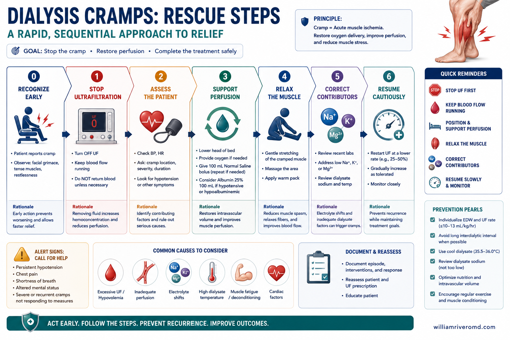
Four-step horizontal sequence for at-the-chair calf-cramp rescue — straighten the knee, dorsiflex the ankle for 20–30 seconds, repeat once, then tell the nurse.
© renalcarematters.com
A cramp is a runaway feedback loop in the nervous system — it is not a sign that the muscle is "torn" or that something major is happening to your heart. The fastest way to interrupt the loop is to stretch the muscle in the opposite direction, which loads the "brake" inside the tendon and tells the spinal cord to stop firing. Do it slowly and steadily, do not bounce.Ang pulikat ay isang walang kontrol na feedback loop sa sistema ng nerbiyo — hindi ito senyales na nasira ang kalamnan o may mabigat na nangyayari sa puso. Ang pinakamabilis na paraan upang pigilan ang loop ay i-stretch ang kalamnan sa kabaligtarang direksyon, na nagbibigay-buhay sa "preno" sa tendon at nagsasabi sa spinal cord na tigilan na ang firing. Gawin nang mabagal at tuluy-tuloy, huwag bumabuwelo.Ang kulokot usa ka dili kontrolado nga feedback loop sa sistema sa nerbiyo — dili kini senyales nga ang kaunoran "naguba" o nga adunay grabe nga nahitabo sa kasingkasing. Ang pinakapaspas nga paagi sa pagbabag sa loop mao ang pag-stretch sa kaunoran sa atbang nga direksyon, nga magpuno sa "preno" sa tendon ug magsulti sa spinal cord nga undangon ang firing. Buhata kini nga hinay ug padayon, ayaw og bouncing.Reng pulikat metung yang alang kontrol a feedback loop king sistema ning nerbiyo — ali ya senyales nung "nasira" ya ing kaunan o ating maragul a malalyari king pusu. Reng kabud-bilis a paraan ban pigilan na ya ing loop, iya ya ing pag-stretch ning kaunan king kasalumbatan a direksyon, a pinupuno na ya ing "preno" king tendon at sasabi king spinal cord ban pamigilan na ya ing firing. Gawan mu nang marayung at marayung, eka magbouncing.
A simple cramp diary and a leg photo log change the conversation.Ang simpleng diary ng pulikat at log ng larawan ng binti ay nagbabago ng usapan.Ang yano nga diary sa kulokot ug log sa litrato sa bitiis nag-usab sa istoryahanay.Reng simpli a diary king pulikat ampong reng log king latawan na ning bitis pampabaguh king pami-usapan.
Two tiny notebooks (or notes on your phone) often unlock answers your dialysis team cannot guess at:Dalawang maliliit na notebook (o note sa telepono) ang madalas magbubukas ng mga sagot na hindi kayang hulaan ng iyong dialysis team:Duha ka gagmay nga notebook (o notes sa imong telepono) ang sagad nagabukas sa mga tubag nga dili matagna sa imong dialysis team:Aduang maliliting notebook (o notes king imung telepono) parati lang ibubuklat lang sasagut a ali makayatas ya ing imung dialysis team:
- Cramp diary. For each cramp, write: the date, which leg, what hour of dialysis it started, your interdialytic weight gain that morning, your UF total, and the lowest blood pressure your nurse recorded. Bring this to every clinic visit.Diary ng pulikat. Para sa bawat pulikat, isulat: ang petsa, kung aling binti, anong oras ng dialysis ito nagsimula, ang iyong IDWG ng umagang iyon, ang iyong kabuuang UF, at ang pinakamababang presyon ng dugo na naitala ng nurse mo. Dalhin ito sa bawat clinic visit.Diary sa kulokot. Alang sa matag kulokot, isulat: ang petsa, asa nga bitiis, asa nga oras sa dialysis kini nagsugod, ang imong IDWG sa adlaw nga buntag, ang imong total nga UF, ug ang pinakaubos nga presyon sa dugo nga gisulat sa imong nars. Dad-a kini sa matag clinic visit.Diary ning pulikat. King dilas a pulikat, isulat mu: ing petsa, nung ali a bitis, nanu yang oras a sinimulan ya king dialysis, ing imung IDWG king abak ita, ing imung kabuuan a UF, at ing kabud-baba a presyon a daya a isinulat na ning imung nars. Dalan mu ya king dilas a clinic visit.
- Leg photo log. Once a month, in the same daylight and from the same angle, take a photo of both calves and ankles. Pigment changes are imperceptible week to week but obvious quarter to quarter — and seeing it pause or fade is one of the most motivating signals you can show yourself and your nephrologist.Log ng larawan ng binti. Minsan kada buwan, sa parehong liwanag ng araw at sa parehong anggulo, kumuha ng larawan ng dalawang lulod at bukung-bukong. Hindi nakikita ang pagbabago ng pigmento bawat linggo, pero halatang-halata buwan-buwan — at ang makita itong huminto o kumupas ay isa sa pinakanagbibigay-inspirasyong senyales na maipapakita mo sa sarili mo at sa nephrologist.Log sa litrato sa bitiis. Kausa sa kada bulan, sa parehas nga kahayag ug parehas nga anggulo, pagkuha og litrato sa duha ka batiis ug buko-buko. Dili makita ang pagbag-o sa pigmento semana-semana, apan klaro buwan-buwan — ug ang pagkakita niini nga mihunong o nahanaw maoy usa sa labing nagdasig nga senyales nga imong mapakita sa imong kaugalingon ug sa nephrologist.Log ning latawan na ning bitis. Metung king dilas a banua, king parehas a kasaganaan na ning aldo at parehas a anggulo, kumukuha ka latawan na ning aduang lulod ampong bukung-bukung. Ali la makikita reng pamipalit na ning pigmento kada semana, pero matarapating banua-banua — at reng pamikit ya ing pamipigil o pamipangupas, iya ya ing kabud-nakaka-inspirasyon a senyales a ipakit mu king sarili mu at king nephrologist.
Symptoms that are not just cramps or pigment — call for help.Mga sintomas na hindi lamang pulikat o pigmento — humingi ng tulong.Mga sintomas nga dili lamang kulokot o pigmento — pangayoa og tabang.Reng sintomas a ali mu pulikat o pigmento — pangadyan kang tabang.
⚠️ Seek urgent assessment if you have:Magpasuri kaagad kung mayroon ka ng:Magpa-eksamin dayon kung naa ka:Magpa-eksamin ka agad nung atin kang:
Intradialytic cramp — a bioenergetic failure of relaxation.
Five-hit cramp mechanism convergent on SERCA failure with the bottom intervention-and-benefit flow.
© renalcarematters.com
Multi-scale schematic of SERCA-ATP relaxation, the SR Ca²⁺ reuptake bottleneck, and the cofactor inputs (L-carnitine, B-vitamins, Mg²⁺, CoQ10) that feed mitochondrial ATP.
© renalcarematters.com
Skeletal-muscle relaxation is the ATP-dependent step. SERCA reuptakes 2 Ca²⁺ per ATP into the sarcoplasmic reticulum, and a normal twitch terminates in 5–10 ms only because that pump keeps pace. When ATP supply falls below demand, cytosolic Ca²⁺ is not recaptured, actin–myosin engagement persists, and the myocyte locks into a sustained contracture — the clinical cramp. Hits 1 and 4 below converge on inadequate aerobic ATP regeneration; hits 2 and 3 lower the excitation threshold so the energy-starved muscle is also easier to trigger; hit 5 adds the mechanical/afferent geometry that explains both the timing and why a passive stretch aborts the discharge.
Hypovolemia → muscle hypoperfusion → ischemic hypoxia
Aggressive UF contracts plasma volume faster than the interstitium can refill, precipitating intradialytic hypotension and skeletal-muscle hypoperfusion. Reduced convective O₂ delivery throttles oxidative phosphorylation precisely when SERCA demand peaks. The literal tissue-hypoxemia node.
Contraction alkalosis + ionized hypocalcemia
Removing volume without removing bicarbonate concentrates HCO₃⁻ (~21 → ~23 mmol/L per liter UF), and bicarbonate-buffered dialysate amplifies it. Alkalosis drives Ca²⁺ onto albumin (functional hypocalcemia), promotes SR Ca²⁺ release, and raises NMJ excitability.
Osmolar & electrolyte shifts
Rapid falls in plasma osmolality and in K⁺ and Mg²⁺ destabilize sarcolemmal and motor-neuron resting potentials and favor spontaneous discharge — the hyperexcitability layer.
Substrate-level ATP depletion (cofactor-limited)
Even with adequate O₂, ATP yield collapses without cofactors. ~70–80% of carnitine clears per session (deficiency reported in up to ~85% of HD patients), dialyzable water-soluble vitamins and CoQ10 (further suppressed by statins) drop, and magnesium loss further impairs the ETC. The mitochondrial node.
Mechanical tissue stretch & afferent geometry
Lower-limb edema raises interstitial pressure, compresses capillaries, and lengthens the capillary-to-myocyte O₂ diffusion path — a compartment effect amplifying hit 1. Rapid osmotic shifts also deform sarcolemma, opening stretch-activated channels. Crucially, cramps reflect ↑ muscle-spindle (excitatory) + ↓ Golgi tendon organ (inhibitory) input, worst when the muscle sits shortened and fatigued — exactly the semi-recumbent dialysis chair. Passive stretching reloads the GTO and aborts the discharge.
Cramps cluster in the last hour of HD because hits 1–4 reach maximal simultaneous severity at peak cumulative UF, while hit 5 has been compounding throughout the session. The energy-debt frame ("the muscle ran out of O₂-derived ATP and could not let go") is the most parsimonious organizing principle for teaching and prescribing.
Stasis hemosiderin as a chronic tissue-hypoxia archive.
Stasis-pigmentation pathway from venous hypertension to red blood cell (RBC) extravasation, hemosiderin deposition, MMP activation, and the gaiter consequence ladder.
© renalcarematters.com
Stasis (hemosiderin) hyperpigmentation is the cutaneous fingerprint of chronic ambulatory venous hypertension. The mechanism is straightforward and well-established:
- Sustained venous hypertension widens interendothelial junctions in dermal capillaries.
- Erythrocyte extravasation follows; lysed RBCs release hemoglobin → ferritin → hemosiderin, producing the characteristic gaiter pigmentation.
- Extravasated ferric iron and ferritin activate matrix metalloproteinases (MMPs), perpetuating dermal injury, impaired healing, lipodermatosclerosis, and ulceration.
- Pericapillary fibrin cuffs, leukocyte trapping/activation, and chronic edema widen the O₂ diffusion distance and sustain a low-grade tissue-hypoxic, pro-inflammatory state in the gaiter region.
Pigmentation is therefore the slow-motion, structural counterpart to the acute cramp: a tissue archive of a leg that has been chronically venously overloaded and poorly oxygenated.
The "Hypoxic Lower-Limb" hypothesis — one upstream field, two outputs.
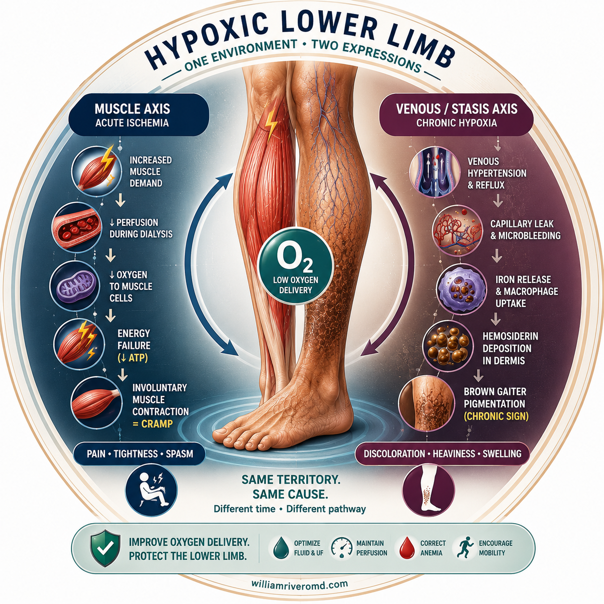
Minimal monoline sigil of the Hypoxic Lower-Limb Spectrum — a single lower leg connected by dotted crosstalk arrows to a dialysis-machine pictogram (acute cramp axis) and a dermal-capillary motif (chronic pigment axis).
© renalcarematters.com
Two-axes-one-field figure: acute and chronic outputs of a single hypoxic lower-limb field, the central teaching diagram of the hypothesis.
© renalcarematters.com
The clinical observation — cramps and stasis pigmentation co-occurring in the same maintenance-HD patient far more often than chance — is best understood as convergent, not causally sequential. Both are manifestations of a chronically volume-overloaded, microvascularly compromised, and dependently congested lower limb whose oxygen supply–demand balance is repeatedly violated. The cramp is the acute, intermittent discharge of that state during UF; the pigmentation is its chronic, cumulative tissue archive. They share a substrate and a currency (impaired tissue oxygenation), not a direct causal arrow.
Honest framing
Each pillar — alkalosis/ischemia/ATP cramp model, venous-hypertension/hemosiderin pigment model, shared volume/microvascular/peripheral arterial disease (PAD) substrate — is separately well supported. There is no published study that directly tests the two as a linked syndrome. The "Hypoxic Lower-Limb" hypothesis is a mechanistic synthesis and a shared-risk-factor argument — a unifying teaching model and an audit-worthy hypothesis, not a proven causal entity. Treat it as such with patients and colleagues.
Shared upstream nodes (why they travel together)
| Shared node | Feeds the cramp (acute axis) | Feeds the pigment (chronic axis) |
|---|---|---|
| Chronic interdialytic volume overload | Large UF volumes → contraction alkalosis + hypoperfusion | ↑ venous/capillary pressure in dependent legs → extravasation, hemosiderin |
| Dependent lower limbs (gravity) | First muscle bed to lose perfusion during intradialytic hypotension (IDH) | Bear the highest hydrostatic venous load → gaiter pigmentation |
| CKD micro/macrovascular disease | ↓ vasodilator reserve → worse ischemia under UF stress | Impaired microcirculation → poorer iron clearance and healing |
| Renal anemia / ↓ O₂-carrying capacity | Lowers the O₂ supply floor before UF begins | Lowers baseline dermal PO₂ |
| Autonomic dysfunction | Blunts vasoconstrictor defense of BP during UF | Impairs venous tone, worsens pooling |
| Mitochondrial/cofactor depletion | Caps ATP regeneration → relaxation failure | Impairs reparative and anti-inflammatory dermal capacity |
| Mechanical tissue stretch (edema + UF/osmotic shift) | ↑ O₂ diffusion distance + stretch-activated hyperexcitability + spindle/GTO imbalance | Widens interendothelial junctions → RBC extravasation → hemosiderin |
Systematic workup of the cramp-and-pigment patient.
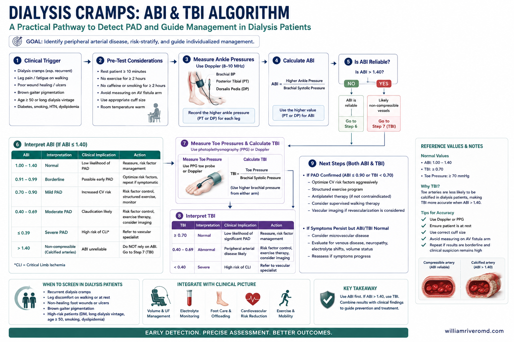
Portrait clinical algorithm for the vascular safety gate in the cramp-and-pigment DM-CKD patient — ABI, TBI, and TcPO₂ sequenced before any compression therapy, with multidisciplinary-referral routing.
© renalcarematters.com
Approach the joint phenotype as one work-up, not two. Anchor the history on the cramp, the exam on the leg, and the labs on the bioenergetic and microvascular substrates. Build the dialysis-prescription audit and the vascular review into the same encounter — they will redirect management far more often than a single new prescription.
Practical management — one prescription, two axes.
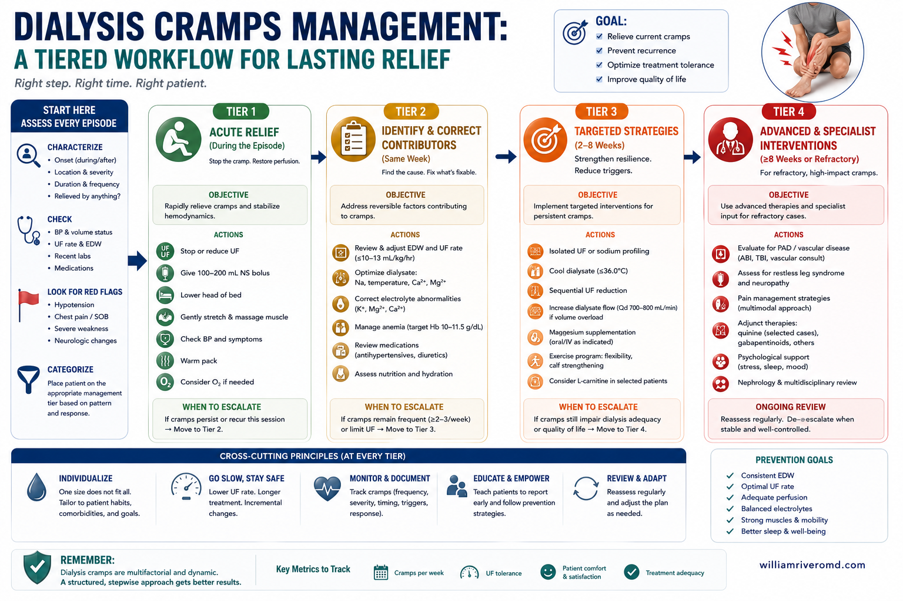
Clinician-mode circular workflow showing the four management levers — Tier 1 volume and Rx, Tier 2 acute rescue, Tier 3 bioenergetic, Tier 4 lower-limb venous axis — with a continuous reassessment outer loop.
© renalcarematters.com
Because the upstream substrate is shared, virtually every meaningful intervention attacks both axes simultaneously. Build the plan around four levers — volume/dialysis prescription, intradialytic rescue, integrative-nutrition / bioenergetic support, and the lower-limb venous axis — and apply them in tiers.
| Tier | Approach | Specific actions | Evidence |
|---|---|---|---|
| Tier 1 Volume & Rx |
Flatten the volume curve | Dry weight: reassess every 1–3 mo and post-event IDWG: Na restriction (< 5 g/d) + dietitian counsel; target ≤ 4–5% dry weight (DW) UFR: ≤ 10 mL/kg/h — extend session, ↑ frequency, or incremental HD if persistently high Dialysate: individualize Na profiling; avoid over-correction of acidosis / excess HCO₃⁻; review Mg/Ca |
Strong (KDOQI / KDIGO volume; observational for UFR ≤ 10) |
| Tier 2 Acute rescue |
At-the-chair cramp interruption | Passive stretching (dorsiflexion / knee extension) to reload the Golgi tendon organ and abort the discharge Saline bolus (normal or hypertonic) per protocol — restores volume and induces a brief dilution acidosis Reposition out of the shortened-calf seated posture; ankle pumps every 30 min as a pre-emptive intervention |
Strong (stretching, Schwellnus et al.; saline conventional) |
| Tier 3 Bioenergetic / integrative-nutrition |
Refill the ATP fuel tank | L-carnitine — IV 1 g post-HD × 12–24 wk where available; oral 500–1000 mg PO BID as a Philippine-context alternative when IV is not on formulary (see §6 Pharmacology) Renal B-complex per HD-appropriate dosing; replace dialyzable water-soluble vitamins Magnesium: keep mid-normal serum range; avoid low-Mg dialysate when feasible CoQ10: consider in statin users with persistent muscle symptoms |
Moderate (carnitine RCTs mixed; B-vitamin replacement standard) |
| Tier 4 Lower-limb venous axis |
Attack the chronic pigment driver — safely | Leg elevation 20–30 min × 2/day; calf-pump activation & walking Skin care: bland emollients, treat fissures early Compression therapy only after ABI documents adequate arterial inflow (CKD has high PAD prevalence) Cross-organ vigilance: anemia (KDIGO Hgb target), BP/autonomic review, PAD & calcification screen, glycemic control |
Strong (venous insufficiency); ABI safety gate strong |
ABI before any compression in CKD
Peripheral arterial disease is markedly more prevalent in CKD/dialysis. Compression on an ischemic limb can precipitate tissue loss. Document ABI > 0.8 (and consider toe pressure / TBI in calcified vessels) before prescribing graduated compression for stasis change.
Pharmacology and adjunctive therapies — doses, evidence, safety in CKD.
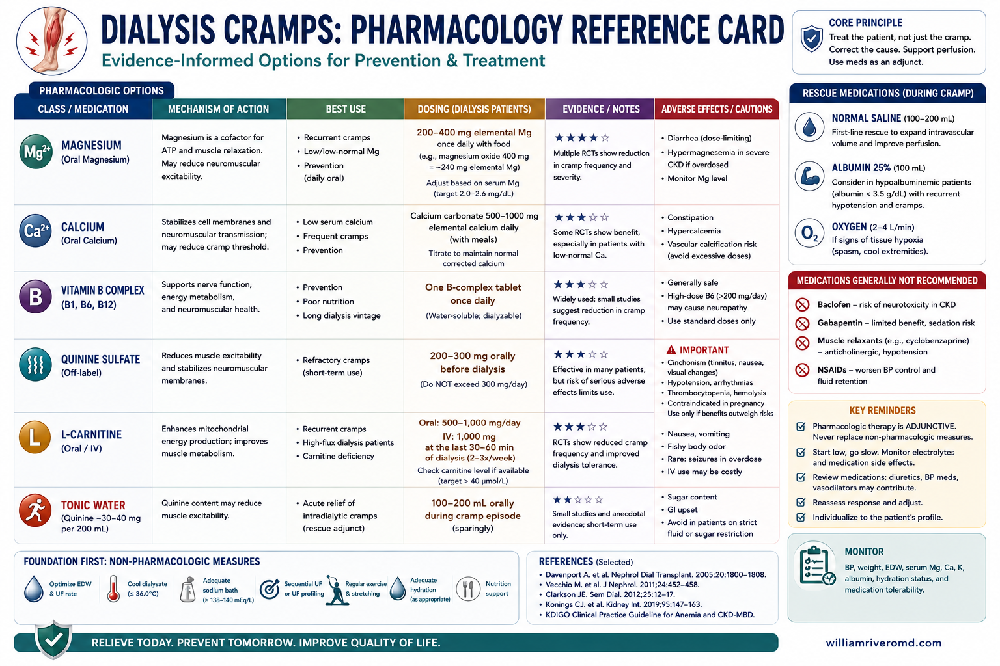
Clinician quick-reference card listing the 12 pharmacology and adjunct levers with CKD-specific doses and safety notes, including the Philippine-context oral L-carnitine row directly under the IV row.
© renalcarematters.com
Pharmacology is additive, not a substitute for the volume/UF/dialysate corrections in §6 management. Use the table below to bring concrete dose, evidence grade, and CKD-specific safety considerations to bedside decisions. All renal dose-adjustments assume maintenance HD with no significant residual renal function; verify against the patient's estimated glomerular filtration rate (eGFR) slope, urine output, and the local formulary.
| Agent / intervention | Indication (within this spectrum) | Suggested regimen | Evidence and CKD-specific notes |
|---|---|---|---|
| L-carnitine | Refractory cramps, fatigue, confirmed deficiency, statin-co-prescribed | Evidence-grade route (IV): 1 g IV at the end of each HD session × 12–24 wk (post-dialyzer line); re-evaluate at 12 wk. Practical Philippine alternative (oral): L-carnitine 500–1000 mg PO BID (1–2 g/day total) × 12–24 wk where IV is unavailable; take post-HD on dialysis days. |
Mechanistic and clinical rationale reviewed in Date (2021). IV is the regimen used in most RCTs and avoids first-pass / gut metabolism, but is often unavailable in Philippine outpatient HD units — oral L-carnitine retains a clinical role in that setting. Trade-off is lower bioavailability and a theoretical gut-derived TMAO concern; pair oral therapy with a low-red-meat / low-egg-yolk dietary pattern to limit dietary L-carnitine + choline substrate for TMAO. Monitor symptom response and free carnitine where available. |
| Dialysate magnesium | Recurrent intradialytic cramping, low serum Mg, refractory to UF/IDWG fixes | Consider raising dialysate Mg from ≤ 0.5 mmol/L to 0.75 mmol/L center-wide or per-patient; recheck serum Mg in 4–6 wk | The Dial-Mag pragmatic cluster RCT (Tangri et al., 2025) is actively comparing these two policies for mortality, MACE, and cramp burden. Earlier observational data link low serum Mg to higher cramp burden and CV risk. |
| Renal B-complex | Universal in maintenance HD; specifically replaces dialyzable water-soluble vitamins (thiamine, B6, folate, B12) | One renal multivitamin tablet daily, taken post-HD on dialysis days; avoid non-renal multivitamins (vitamin A accumulation risk) | Standard of care; KDOQI nutrition guidance. Low cost, low risk. |
| CoQ10 (ubiquinone) | Statin-co-prescribed patients with persistent muscle symptoms or refractory cramps | 100–200 mg PO daily × 12 wk trial; reassess; continue if symptom-improved | Mechanistic rationale (statin-induced CoQ10 depletion impairs mitochondrial ETC); RCT evidence in HD is limited but safety profile is benign. No CKD dose adjustment. |
| Saline bolus (acute cramp rescue) | Active intradialytic cramp with hypotension | 100–250 mL normal saline IV per protocol; hypertonic 23.4% NaCl 10–15 mL as alternative in volume-loaded patients | Conventional rescue; induces brief dilution acidosis and restores intravascular volume. Always pair with UF reduction and passive stretching at the chair (Schwellnus et al., 1997). |
| Topical wound care + compression (CEAP C4b–C6) | Stasis dermatitis, established gaiter, healing ulcer | Bland emollient (petrolatum-based); short-contact topical steroid for active dermatitis; multilayer compression bandaging by trained team after ABI + TBI exclude critical PAD | Network meta-analysis confirms adjunctive compression remains the cornerstone of venous-leg-ulcer healing (Phlebology, 2026). ABI ≥ 0.8 + TBI ≥ 0.7 is the conservative threshold in DM-CKD. |
| Pentoxifylline | Adjunct to compression in CEAP C5–C6 ulcers not healing on compression alone | 400 mg PO TID × 6 mo (renal dose-reduce to 400 mg BID in maintenance HD or per local pharmacy) | Off-label for VLU but supported as effective adjunct in network MA (Phlebology, 2026). Watch for GI upset, headache; minor anticoagulant effect. |
| Denosumab (anti-RANKL) | Active Charcot neuro-osteoarthropathy in DM-CKD where bisphosphonates are contraindicated | 60 mg SC single dose, combined with total-contact casting and offloading; vitamin D and calcium replete first (hypocalcemia risk) | Pilot RCT in DM-CKD with active CNO showed earlier remission vs standard-of-care alone (Jude et al., 2024). Critical safety: aggressive 25-OH-D and Ca repletion before dose (hypocalcemia particularly severe in CKD). |
| Cinacalcet / etelcalcetide review | Cramp-prone patients on calcimimetics with low post-HD ionized Ca | Re-titrate dose or convert to alternative SHPT regimen; check ionized Ca trend | Hypocalcemic cramping is a recognized class effect; mid-week ionized Ca and parathyroid hormone (PTH) should drive titration, not symptoms alone. |
| sodium–glucose cotransporter-2 (SGLT2) inhibitors / GLP-1 RA in DM | Cardio-renal protection in DM-CKD (per KDIGO 2024) | Initiate per current guidelines; baseline + quarterly foot exam mandatory for canagliflozin (CANVAS amputation signal); avoid initiation during active foot infection or pre-ulcerative lesion | Foot exam mandate is a labeling requirement, not optional. Class benefits on cardio-renal endpoints outweigh foot risk in stable feet, but the spectrum matters: do not start during stage 4+ lesions. |
| Adjunctive non-pharmacologic | Patient acceptance / adherence to the cramp program | Supervised intradialytic ankle pumps + dorsiflexion every 30 min; calf massage; lower-leg aromatherapy massage (small RCT signal) | Low risk, useful to anchor patient engagement; nurse-led implementation is the highest-yield organizational lever. |
Drugs that worsen cramps — review at every cramp clinic visit
Statins (without CoQ10), aggressive diuretics in residual-function patients, calcimimetics with low ionized Ca, bisphosphonates (contraindicated by CKD), and excess phosphate binders driving acid–base shifts. Sympathomimetic decongestants and short-acting β-2 agonists are easy-to-miss precipitants.
The Hypoxic Lower-Limb Spectrum — one continuum, one diabetic accelerator.
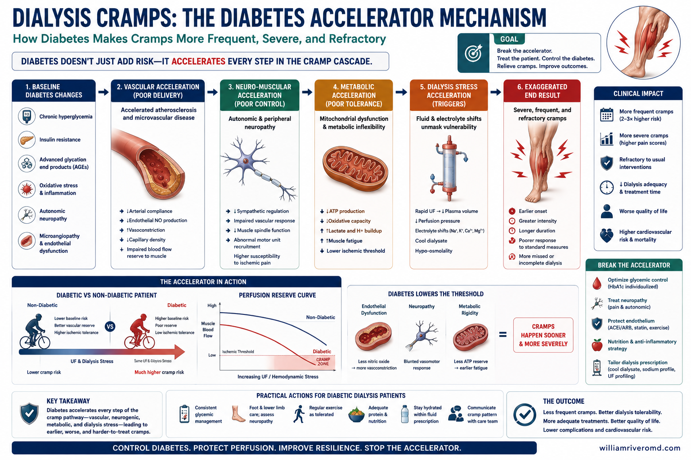
Diabetes-acceleration schematic showing the five DM-specific levers — autonomic neuropathy deepening IDH, sensory neuropathy masking pre-ulcerative injury, AGE-driven mitochondrial impairment, medial arterial calcification rendering ABI falsely normal, and impaired neutrophils with glycated matrix delaying healing.
© renalcarematters.com
Hypoxic Lower-Limb Spectrum staircase mapped to CEAP and DM acceleration, the master orienting figure for the section.
© renalcarematters.com
The cleanest way to think about the cramp + stasis-pigmentation phenotype is not as two diseases, but as a single, slow-moving continuum of lower-limb tissue hypoxia. Patients move along it at different rates depending on volume status, microvascular reserve, and — most importantly — diabetes. The same upstream lever (volume + perfusion + tissue oxygen) operates throughout; what changes across the spectrum is the visible marker.
| Stage | Visible / felt marker | Underlying state | Recommended action |
|---|---|---|---|
| 0 · Subclinical CEAP C0 |
None | Adequate microcirculation; intact bioenergetic margin | Maintain IDWG < 5%, dry weight discipline, exercise on non-HD days |
| 1 · Acute axis emerging CEAP C1 |
Last-hour cramps; legs visually normal | Transient supply/demand mismatch under UF; bioenergetic margin shrinking | Tighten IDWG, target UFR ≤ 10 mL/kg/h, intradialytic stretching, screen carnitine/Mg/B-vitamins |
| 2 · Both axes engaged CEAP C2–C3 |
Recurrent cramps + early hemosiderin tint; tight-shoes-by-evening edema | Established chronic venous hypertension; subclinical RBC extravasation; ongoing energy debt | Add leg elevation 2×/day, calf-pump activation, photo-log start, anemia/iron review |
| 3 · Structural change CEAP C4a |
Established brown gaiter, lipodermatosclerosis, pruritus; cramps may extend into nights | MMP activation, fibrin-cuff pericapillary deposition, sustained gaiter-region tissue hypoxia | Obtain ABI and TBI (ABI alone is unreliable in DM-CKD due to MAC); consider TcPO₂; vascular review; treat dermatitis |
| 4 · Skin-barrier failure / pre-ulcerative CEAP C4b |
Stasis dermatitis, fissures; in DM: callus, blister, or neuropathic pressure-point pre-ulcer | Epidermal compromise; in DM, neuropathy + autonomic anhidrosis + AGEs layered onto the same hypoxic substrate | Multidisciplinary referral (vascular + podiatry + wound care + dietitian); offload pressure points; daily team-led foot exam |
| 5 · Open ulcer CEAP C6 / Wagner 1–3 |
Venous stasis ulcer (non-DM) or diabetic foot ulcer over a pressure point (DM) | Frank ulceration ± infection; in DM-CKD often a mixed neuro-ischemic ulcer with MAC | Immediate revascularization assessment, infection control, advanced wound care, glycemic + volume optimization |
| 6 · Critical limb-threatening Wagner 4–5 |
Rest pain, gangrene, non-healing wound | Failed perfusion + sepsis risk | Limb-salvage angioplasty / bypass; amputation when unsalvageable; palliative re-orientation per goals-of-care |
Why diabetes pushes patients forward along the spectrum
Every node of the Hypoxic-Lower-Limb hypothesis is amplified by diabetes:
- Autonomic neuropathy blunts the vasoconstrictor reflex defending BP during UF — deeper IDH, deeper hit-1 ischemia.
- Microvascular endothelial dysfunction + AGE deposition lowers vasodilator reserve and prolongs reperfusion debt.
- Glycation impairs mitochondrial ETC complexes, compounding the cofactor-limited ATP deficit (hit 4).
- Sensory neuropathy masks the pain feedback that would otherwise trigger early offloading — patients miss the pre-ulcerative stage.
- Medial arterial calcification (MAC) renders the ABI unreliable; the standard safety gate becomes a misleading reassurance.
- Impaired neutrophil function + AGE-driven matrix glycation slows healing once a break occurs — so the same gaiter substrate now produces a non-healing wound.
Evidence base — the diabetes × dialysis × foot intersection
The literature supports every step of the amplification argument (APA 7th narrative citations; full references below):
- In a systematic review of 64 observational studies, DFU incidence in end-stage kidney disease (ESKD) rose with advancing renal impairment and showed a temporal association with hemodialysis initiation — particularly within the first two years — and dialysis-dependent ESKD was independently predictive of lower-extremity amputation, with post-amputation mortality approaching 50% at 2 years and 70% at 5 years (Lim et al., 2026).
- A New Zealand cohort of 772 hospitalized DRFU admissions found that dialysis-dependent patients had a 1-year major-amputation rate of 31.6% vs 3.2% and a 1-year mortality of 33.8% vs 17.6% compared to those with intact renal function (Beaumont et al., 2025).
- A cross-sectional study of 54 DM patients on renal replacement therapy (RRT) in Buenos Aires reported diabetic-foot prevalence of 40.7% (48.6% in the HD subset), 61.1% pre-ulcerative lesions, neuropathy in 87%, and PAD in 81.5% — precisely the substrate the spectrum predicts (Spinelli et al., 2025).
- A 10-year Shanghai cohort identified dialysis (HR 3.05) and severe PAD (HR 3.57) as the two strongest 3-year mortality drivers in moderate-to-severe DFU (Li et al., 2026).
- A Thai cohort showed advanced CKD raised non-healed-ulcer odds (OR 2.69) and 1-year mortality (21.7% vs 8.4%) in hospitalized DFU patients (Sripatpong et al., 2026).
- The ABI — the conventional safety gate — is unreliable in this population: dialysis patients had 7.3× the odds of PAD, and medial arterial calcification rendered ABI falsely normal, so a TBI is the necessary adjunct (Wukich et al., 2015). TBI < 0.7 outperformed ABI as a mortality predictor in dialysis patients (Prasad et al., 2019).
- Pedal vessel calcification on plain foot radiograph is independently associated with major adverse foot events in DM-PN-CKD, with risk rising in step with CKD stage (Brown et al., 2024).
Operational take-home
From stage 3 onward in any diabetic HD patient, replace ABI alone with ABI + TBI, and add TcPO₂ at stage 4. Build a same-week multidisciplinary lane (vascular + podiatry + wound care + dietitian + diabetologist) into your dialysis unit's workflow — the cost of building it once is dwarfed by the cost of the amputations it prevents.
Turning the model into data — testable predictions for your panel.
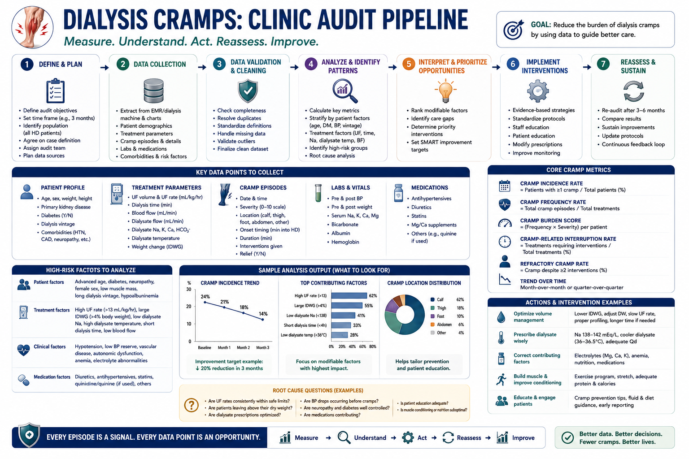
Clinic-audit four-step pipeline for testing the Hypoxic-Lower-Limb hypothesis on a single nephrology unit — phenotype the cohort, capture exposures, test the four predictions, then report and iterate.
© renalcarematters.com
The Hypoxic-Lower-Limb hypothesis converts cleanly into a small clinic audit. Each prediction is straightforward to test in any standing HD cohort:
Evidence hierarchy at a glance
Each pillar is robustly supported on its own. The linked syndrome remains a hypothesis. The clean audit path turns that gap into a clinic-level original contribution.
Clinical pearls.
Pearl 1 — Stretching is not "soft" therapy; it is mechanism-matched
Passive stretching reloads the Golgi tendon organ, restoring the inhibitory afferent that the shortened, fatigued dialysis-chair posture has silenced. It is the highest-yield, lowest-risk intradialytic intervention you can teach the nursing team. Make it standard, not reactive.
Pearl 2 — Re-read the volume curve before reaching for a drug
Most last-hour cramps in a "well-dialyzed" patient resolve when you fix the trio: dry weight, sodium intake / IDWG, and UFR. Pharmacology (carnitine, B-vitamins, magnesium) is additive, not a substitute.
Pearl 3 — The brown gaiter is a clinical sign, not a cosmetic finding
Stasis pigmentation marks a leg that has been venously hypertensive and tissue-hypoxic for a long time, with an elevated risk of dermatitis, lipodermatosclerosis, and venous ulcer. Photograph it once, then quarterly — progression or regression is one of the few CKD lower-limb endpoints you can see with the naked eye.
Pearl 4 — Always exclude PAD before compression
Stasis pigmentation invites the compression reflex. In CKD, that reflex is dangerous without an ABI. Document ABI > 0.8 (or toe pressure / TBI in calcified vessels) before prescribing graduated compression. When in doubt, vascular consult.
Pearl 5 — Recognize active Charcot foot before the X-ray does
The clinical triad — unilateral warmth, swelling, and deformity without pain — in a DM-CKD neuropathic foot is active Charcot until proven otherwise. Mid-foot collapse on radiograph follows the clinical signs by days to weeks. Offload immediately with total-contact casting and refer to podiatry / orthopedics the same day. In CKD, anti-resorptive options are limited — denosumab (60 mg SC, single dose, with aggressive pre-dose Ca + 25-OH-D repletion) is preferred over contraindicated bisphosphonates (Jude et al., 2024).
Pearl 6 — Pedal vessel calcification on plain film is a prognostic finding
In DM with peripheral neuropathy and CKD, the risk of major adverse foot events (ulcer, Charcot, osteomyelitis, minor amputation) rises with both pedal-vessel-calcification (PVC) score and CKD stage (Brown et al., 2024). A free, common imaging modality (plain foot X-ray) becomes a forward-looking risk signal — order it once at the time of TBI/TcPO₂ assessment.
Pearl 7 — Foot-exam mandate before SGLT2i / GLP-1 RA in DM-CKD
The cardio-renal class benefits in DM-CKD (per KDIGO 2024 and 2026 guideline updates) are real and large. But initiation requires a baseline foot exam — explicit Food and Drug Administration (FDA) labeling for canagliflozin (CANVAS amputation signal) and conservative practice for the rest of the class. Do not start during an active foot infection or stage-4 pre-ulcerative finding. Re-examine quarterly thereafter. The drug saves the kidney; the foot exam saves the limb.
Pearl 8 — Frame the model honestly with patients
Patients respond well to "two signals from one leg, on one spectrum" — it reframes both symptoms as solvable through the same levers (volume, oxygen, stretching, footwear) rather than as separate fates. Keep the framing as a teaching model, not a published syndrome — and stage every dialysis-DM patient on the Hypoxic-Lower-Limb Spectrum at each cramp clinic visit so the next checkpoint is visible to both of you.